参数化构件库
共 112 个 BIMBase 参数化智能家居构件，均含可调参数与详细规格说明。可按名称 / 编号 / 空间检索，点击卡片查看完整参数。
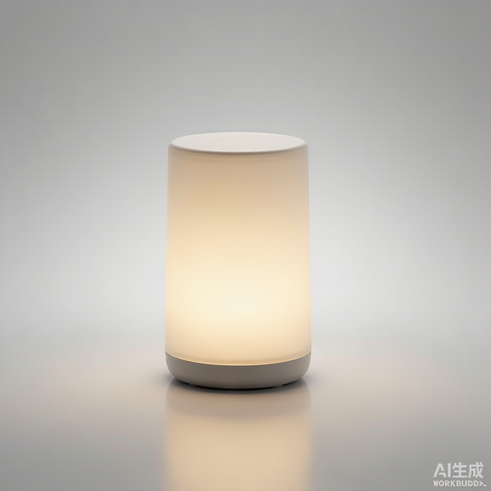
C03-N2_智能香薰氛围灯
C03-N2_智能香薰氛围灯（编号 ）是面向全屋的照明灯具构件。支持家庭场景一键联动与人工切换演示；对照明亮度、色温与照明场景进行参数化调节。构件共内置 12 项可调参数，覆盖几何尺寸、安装方式、外观配色与智能联动，典型如：高度、直径、外观配色、香氛液颜色、玻璃透明度、显示雾气、香氛模式、灯光模式 等，均可在 BIMBase 属性面板中实时调整。所有参数均由属性（Attr）驱动，几何算法保持参数化一致，适用于方案比选、户型布置与智能场景演示。
小熊玩偶
小熊玩偶（编号 C03-1）是面向客厅的装饰摆件构件。在 BIMBase 中按属性驱动几何与状态外观。构件共内置 4 项可调参数，覆盖几何尺寸、安装方式、外观配色与智能联动，典型如：总高、体宽、毛色、配件 等，均可在 BIMBase 属性面板中实时调整。所有参数均由属性（Attr）驱动，几何算法保持参数化一致，适用于方案比选、户型布置与智能场景演示。
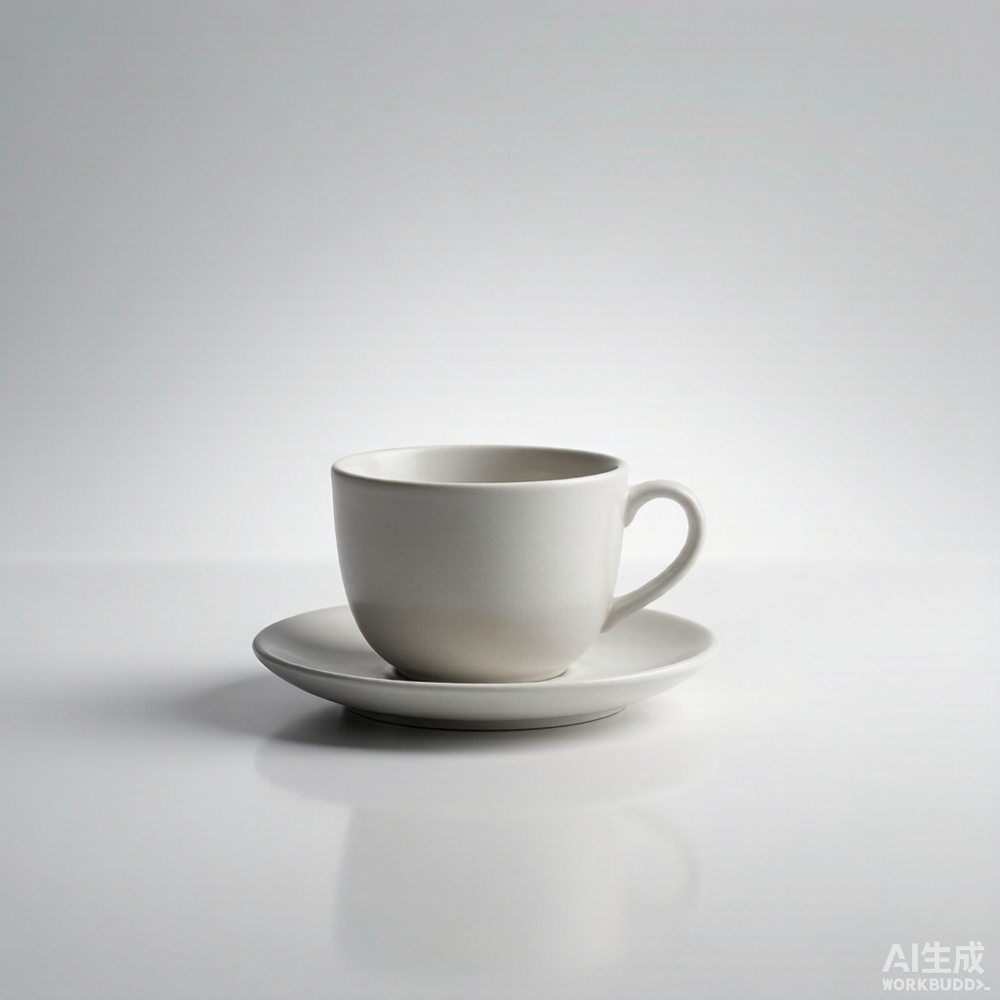
茶杯
茶杯（编号 C04-1）是面向客厅的装饰摆件构件。在 BIMBase 中按属性驱动几何与状态外观。构件共内置 4 项可调参数，覆盖几何尺寸、安装方式、外观配色与智能联动，典型如：杯高、杯口直径、颜色、带盖 等，均可在 BIMBase 属性面板中实时调整。所有参数均由属性（Attr）驱动，几何算法保持参数化一致，适用于方案比选、户型布置与智能场景演示。
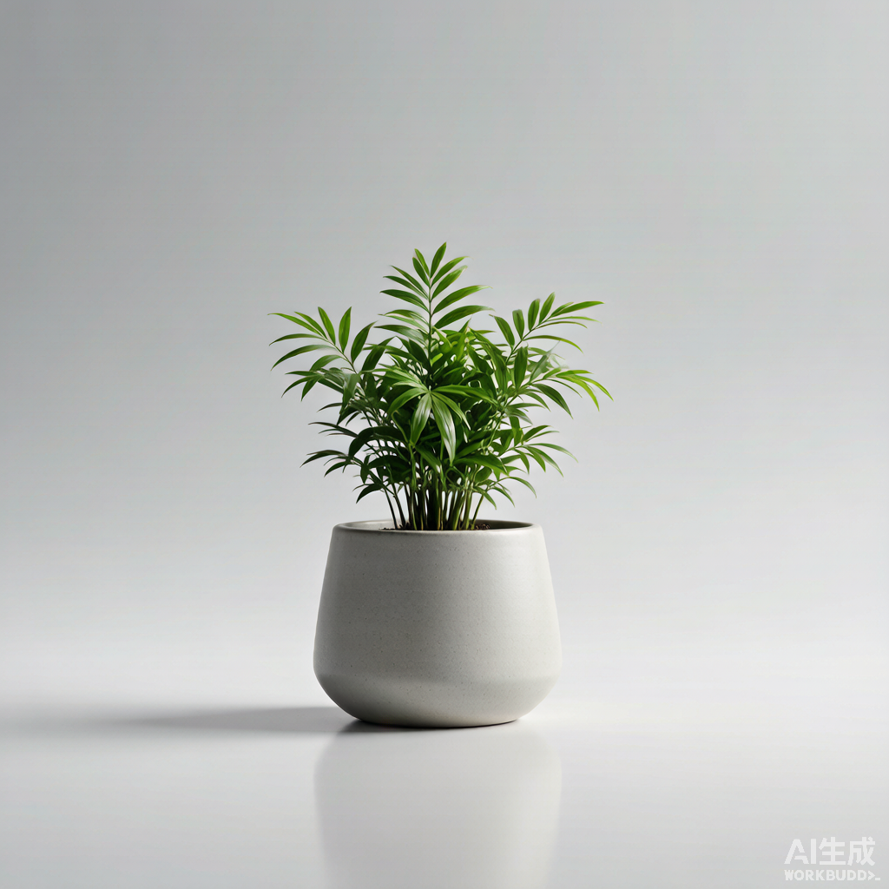
小绿植
小绿植（编号 C05-1）是面向客厅的装饰摆件构件。在 BIMBase 中按属性驱动几何与状态外观。构件共内置 4 项可调参数，覆盖几何尺寸、安装方式、外观配色与智能联动，典型如：盆径、株高、盆色、叶色 等，均可在 BIMBase 属性面板中实时调整。所有参数均由属性（Attr）驱动，几何算法保持参数化一致，适用于方案比选、户型布置与智能场景演示。
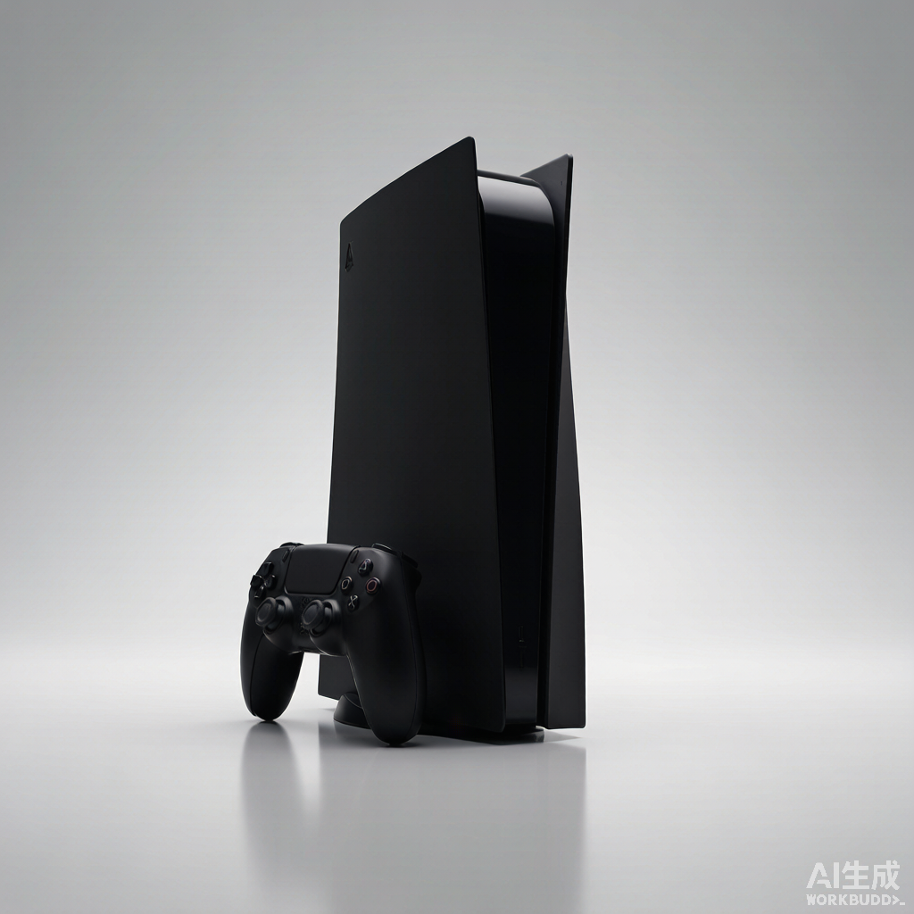
游戏机
游戏机（编号 C05-2）是面向客厅的娱乐休闲构件。在 BIMBase 中按属性驱动几何与状态外观。构件共内置 4 项可调参数，覆盖几何尺寸、安装方式、外观配色与智能联动，典型如：宽、深、高、机身色 等，均可在 BIMBase 属性面板中实时调整。所有参数均由属性（Attr）驱动，几何算法保持参数化一致，适用于方案比选、户型布置与智能场景演示。
C03-N3_现代坐姿猫咪玩偶
C03-N3_现代坐姿猫咪玩偶（编号 C05-4）是面向全屋的装饰摆件构件。在 BIMBase 中按属性驱动几何与状态外观。构件共内置 7 项可调参数，覆盖几何尺寸、安装方式、外观配色与智能联动，典型如：高度、体型、主体颜色、表面质感、表情、项圈、胸腹浅色 等，均可在 BIMBase 属性面板中实时调整。所有参数均由属性（Attr）驱动，几何算法保持参数化一致，适用于方案比选、户型布置与智能场景演示。
企鹅玩偶
企鹅玩偶（编号 C05-5）是面向客厅的装饰摆件构件。在 BIMBase 中按属性驱动几何与状态外观。构件共内置 4 项可调参数，覆盖几何尺寸、安装方式、外观配色与智能联动，典型如：总高、体宽、配色、围巾 等，均可在 BIMBase 属性面板中实时调整。所有参数均由属性（Attr）驱动，几何算法保持参数化一致，适用于方案比选、户型布置与智能场景演示。
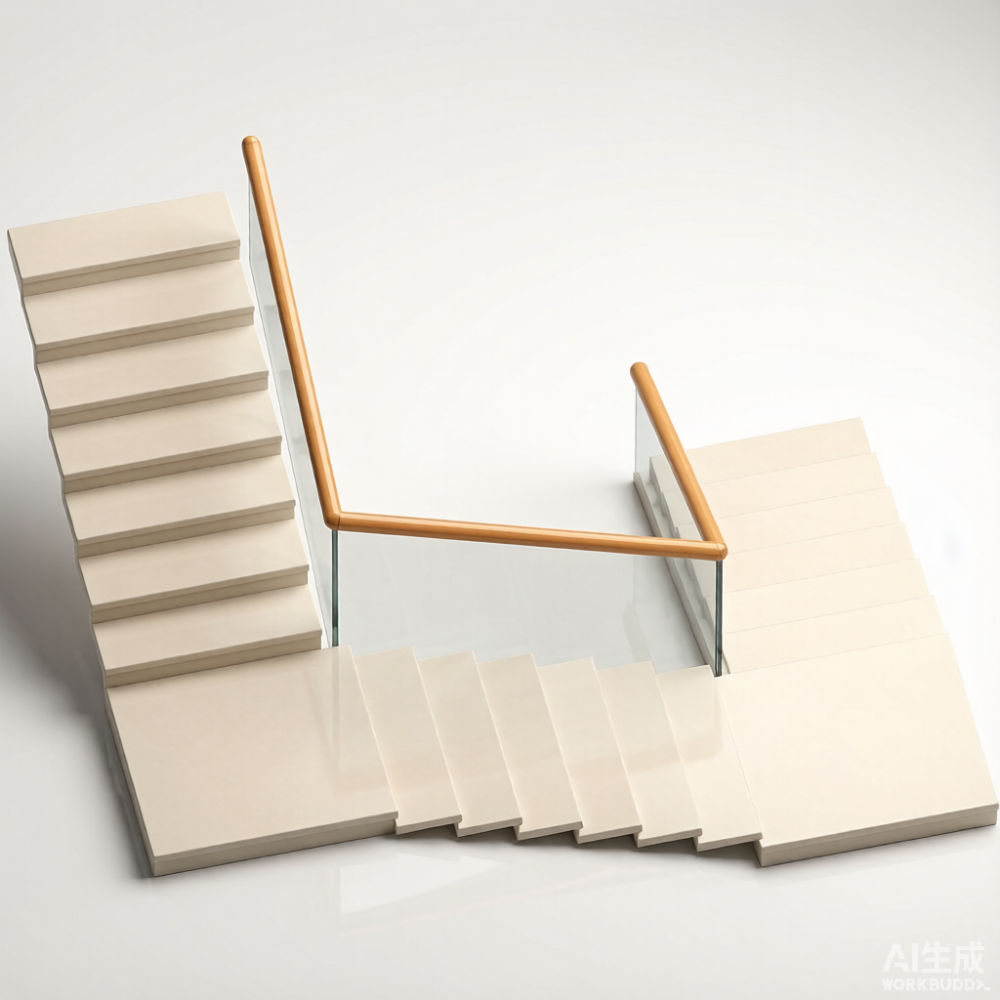
现代别墅三跑楼梯
现代别墅三跑楼梯（编号 ）是面向全屋的楼梯结构构件。在 BIMBase 中按属性驱动几何与状态外观。构件共内置 23 项可调参数，覆盖几何尺寸、安装方式、外观配色与智能联动，典型如：楼梯总长、楼梯总宽、室内净高、楼板及装修层厚度、梯段净宽、踏面深度、第一跑踏步高数、第二跑踏步高数 等，均可在 BIMBase 属性面板中实时调整。所有参数均由属性（Attr）驱动，几何算法保持参数化一致，适用于方案比选、户型布置与智能场景演示。
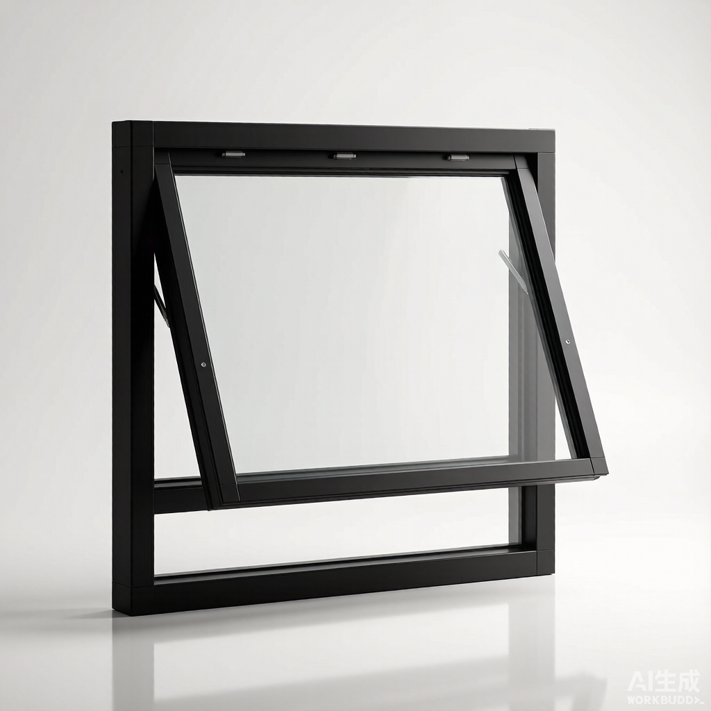
厨房下悬窗
厨房下悬窗（编号 ）是面向厨房的门窗幕墙构件。在 BIMBase 中按属性驱动几何与状态外观。构件共内置 23 项可调参数，覆盖几何尺寸、安装方式、外观配色与智能联动，典型如：窗洞总宽、窗洞总高、下固定区高度、窗框进深、型材面宽、玻璃厚度、安装离地高度、窗扇状态 等，均可在 BIMBase 属性面板中实时调整。所有参数均由属性（Attr）驱动，几何算法保持参数化一致，适用于方案比选、户型布置与智能场景演示。
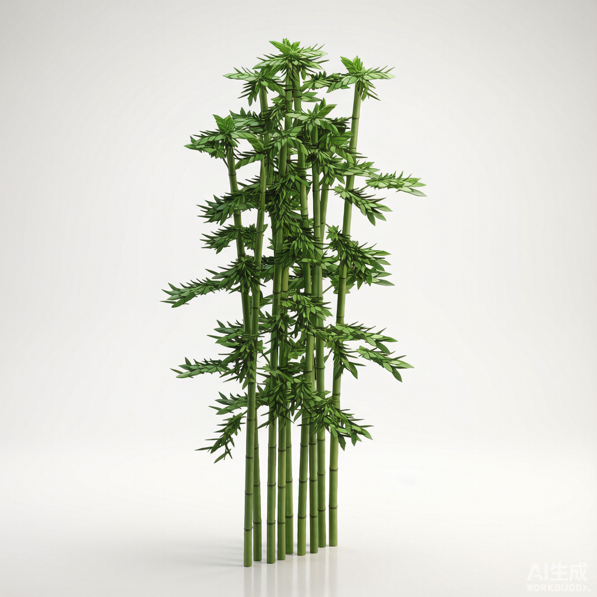
庭院丛生参数化竹子
庭院丛生参数化竹子（编号 ）是面向庭院景观的景观庭院构件。在 BIMBase 中按属性驱动几何与状态外观。构件共内置 9 项可调参数，覆盖几何尺寸、安装方式、外观配色与智能联动，典型如：竹竿数量、竹子高度、竹竿直径、竹丛冠幅、竹子颜色、枝叶密度、构件类别、适用位置 等，均可在 BIMBase 属性面板中实时调整。所有参数均由属性（Attr）驱动，几何算法保持参数化一致，适用于方案比选、户型布置与智能场景演示。
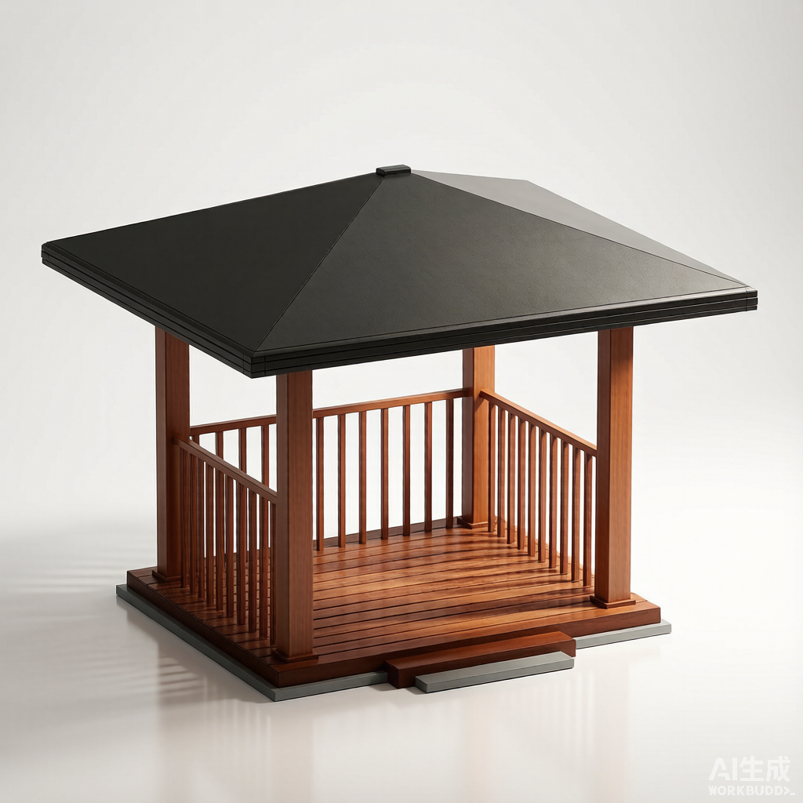
庭院中式现代小凉亭
庭院中式现代小凉亭（编号 ）是面向庭院景观的景观庭院构件。在 BIMBase 中按属性驱动几何与状态外观。构件共内置 12 项可调参数，覆盖几何尺寸、安装方式、外观配色与智能联动，典型如：亭体长度、亭体宽度、平台高度、檐口高度、凉亭总高、柱子尺寸、屋檐挑出、木构颜色 等，均可在 BIMBase 属性面板中实时调整。所有参数均由属性（Attr）驱动，几何算法保持参数化一致，适用于方案比选、户型布置与智能场景演示。
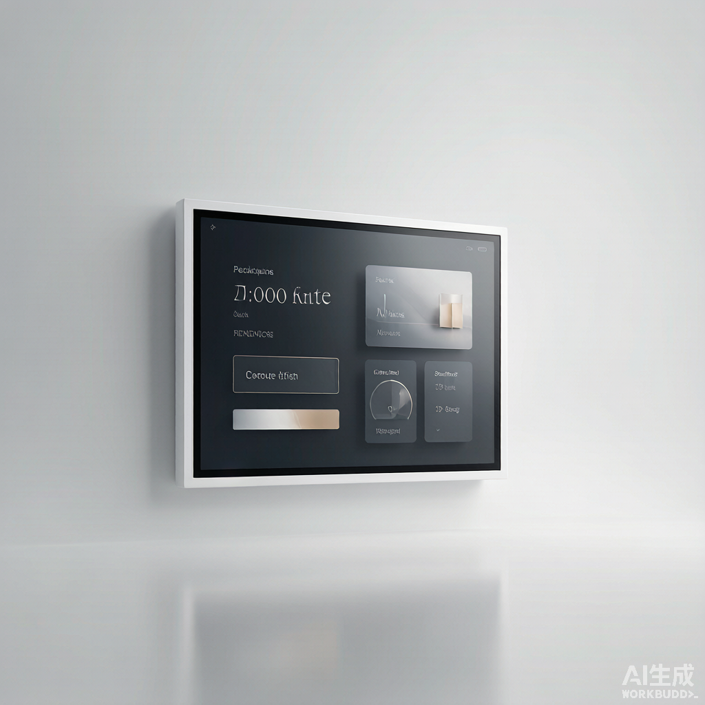
主卧智能中枢显示器
主卧智能中枢显示器（编号 C07）是面向主卧的智能中枢构件。实时汇总室内温湿度、空气质量与环境舒适度；支持家庭场景一键联动与人工切换演示；内置安防与健康类状态监测，可触发告警级别；对照明亮度、色温与照明场景进行参数化调节；可驱动遮阳、通风与开合类执行部件；参与全屋能源与储能策略的可视化与调度；对接阳台家政设备，联动洗烘与晾衣流程。构件共内置 59 项可调参数，覆盖几何尺寸、安装方式、外观配色与智能联动，典型如：设备宽度、设备高度、设备厚度、外壳颜色、界面主题、屏幕亮度、显示模式、当前时间 等，均可在 BIMBase 属性面板中实时调整。所有参数均由属性（Attr）驱动，几何算法保持参数化一致，适用于方案比选、户型布置与智能场景演示。
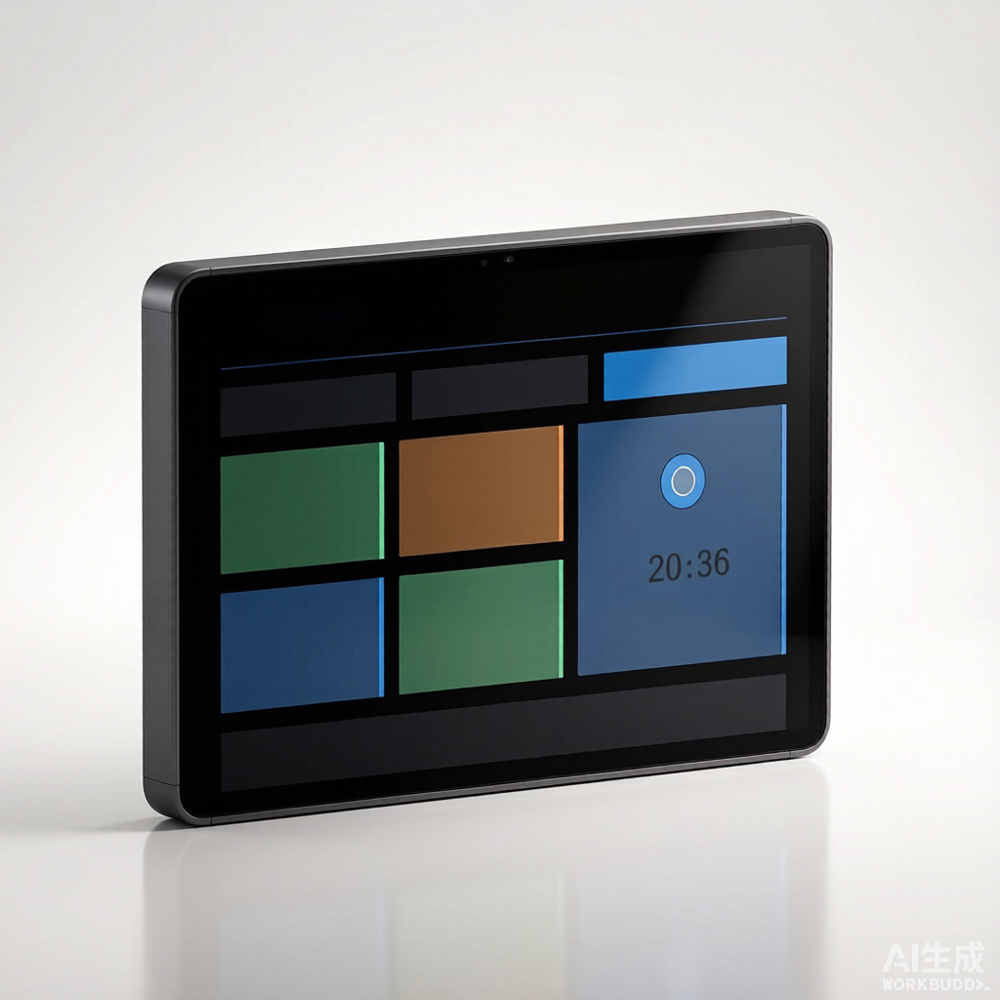
书房智能中枢显示器
书房智能中枢显示器（编号 C04）是面向书房的智能中枢构件。实时汇总室内温湿度、空气质量与环境舒适度；对照明亮度、色温与照明场景进行参数化调节；可驱动遮阳、通风与开合类执行部件；参与全屋能源与储能策略的可视化与调度。构件共内置 27 项可调参数，覆盖几何尺寸、安装方式、外观配色与智能联动，典型如：设备宽度、设备高度、设备厚度、安装方式、外壳颜色、界面主题、屏幕亮度、显示模式 等，均可在 BIMBase 属性面板中实时调整。所有参数均由属性（Attr）驱动，几何算法保持参数化一致，适用于方案比选、户型布置与智能场景演示。
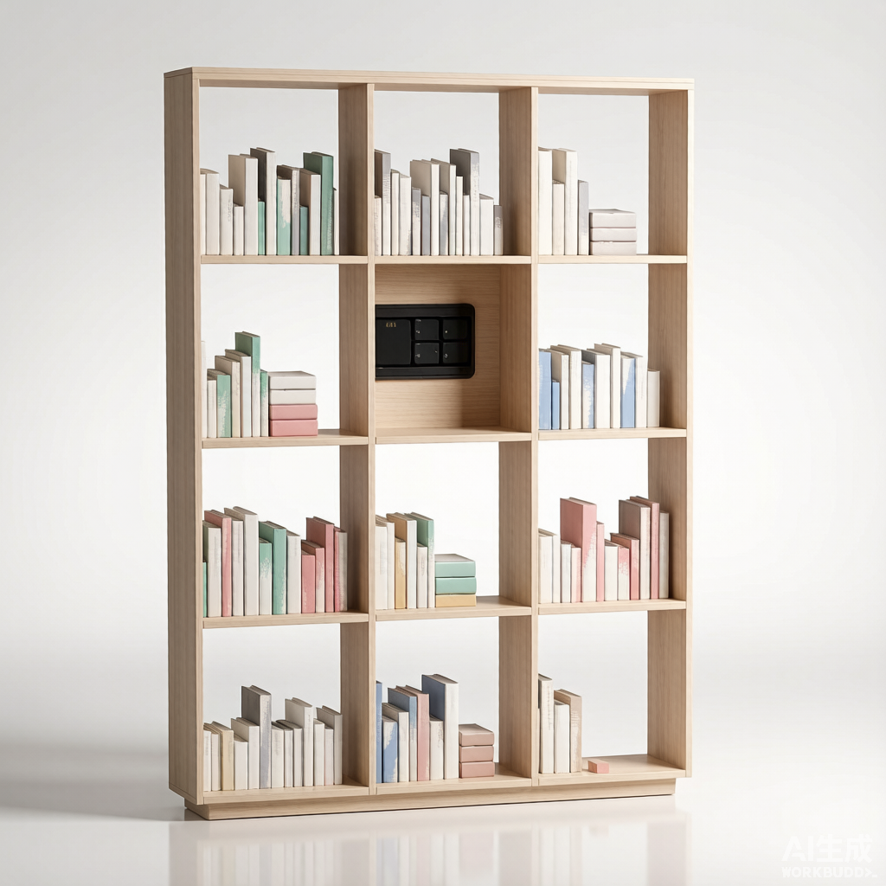
智能书柜
智能书柜（编号 C30）是面向书房的家具软装构件。支持家庭场景一键联动与人工切换演示；对照明亮度、色温与照明场景进行参数化调节。构件共内置 13 项可调参数，覆盖几何尺寸、安装方式、外观配色与智能联动，典型如：宽、深、高、格数、柜面色、带门、柜内照明、系统模式 等，均可在 BIMBase 属性面板中实时调整。所有参数均由属性（Attr）驱动，几何算法保持参数化一致，适用于方案比选、户型布置与智能场景演示。
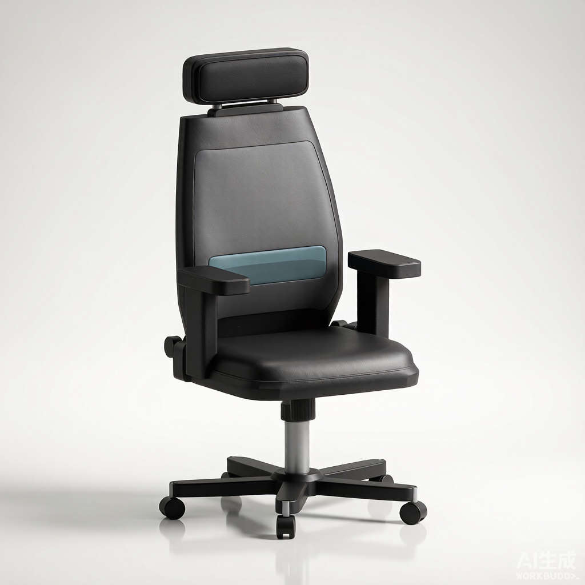
多功能人体工学座椅
多功能人体工学座椅（编号 ）是面向全屋的家具软装构件。实时汇总室内温湿度、空气质量与环境舒适度。构件共内置 21 项可调参数，覆盖几何尺寸、安装方式、外观配色与智能联动，典型如：座面高度、靠背状态、腰托位置、扶手高度、久坐提醒、提醒间隔分钟、坐姿纠正、安全锁 等，均可在 BIMBase 属性面板中实时调整。所有参数均由属性（Attr）驱动，几何算法保持参数化一致，适用于方案比选、户型布置与智能场景演示。
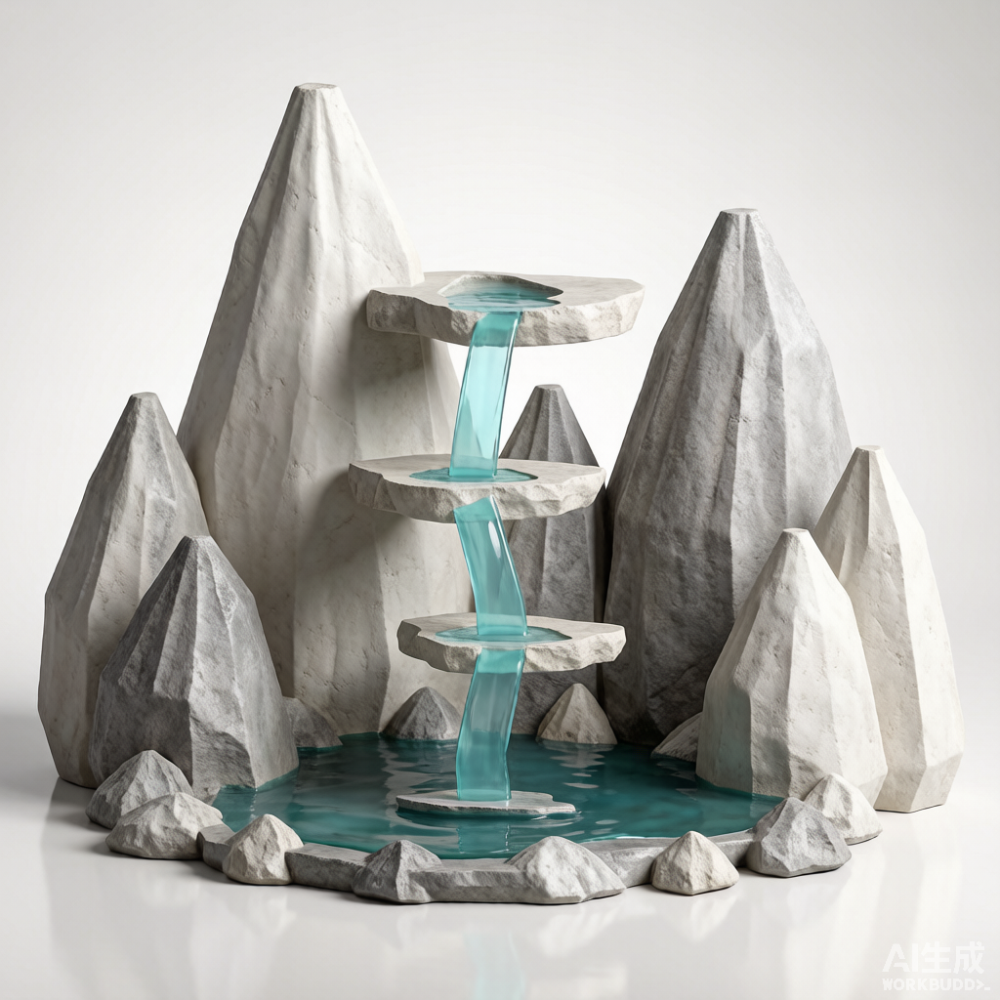
庭院假山流水池塘
庭院假山流水池塘（编号 ）是面向庭院景观的景观庭院构件。在 BIMBase 中按属性驱动几何与状态外观。构件共内置 12 项可调参数，覆盖几何尺寸、安装方式、外观配色与智能联动，典型如：假山总宽、假山总深、假山总高、池塘长度、池塘宽度、池塘深度、流水状态、山石色调 等，均可在 BIMBase 属性面板中实时调整。所有参数均由属性（Attr）驱动，几何算法保持参数化一致，适用于方案比选、户型布置与智能场景演示。
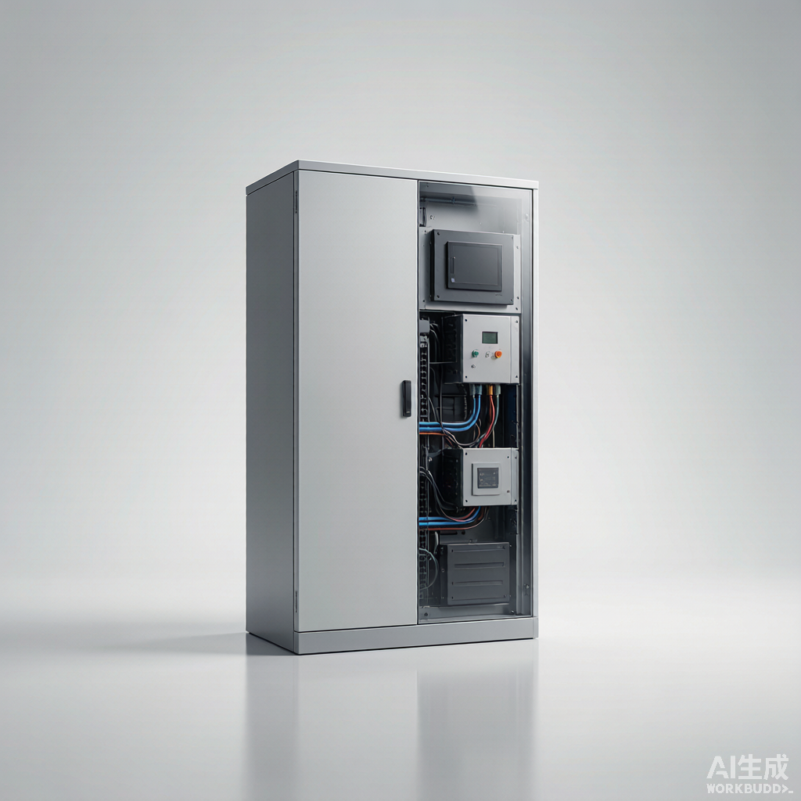
别墅家庭储能设备柜及能源设备区
别墅家庭储能设备柜及能源设备区（编号 E03）是面向能源区的能源设备构件。参与全屋能源与储能策略的可视化与调度。构件共内置 29 项可调参数，覆盖几何尺寸、安装方式、外观配色与智能联动，典型如：设备区总宽、设备区总高、设备区总深、储能柜宽度、储能柜高度、逆变器柜宽度、配电柜宽度、平台高度 等，均可在 BIMBase 属性面板中实时调整。所有参数均由属性（Attr）驱动，几何算法保持参数化一致，适用于方案比选、户型布置与智能场景演示。
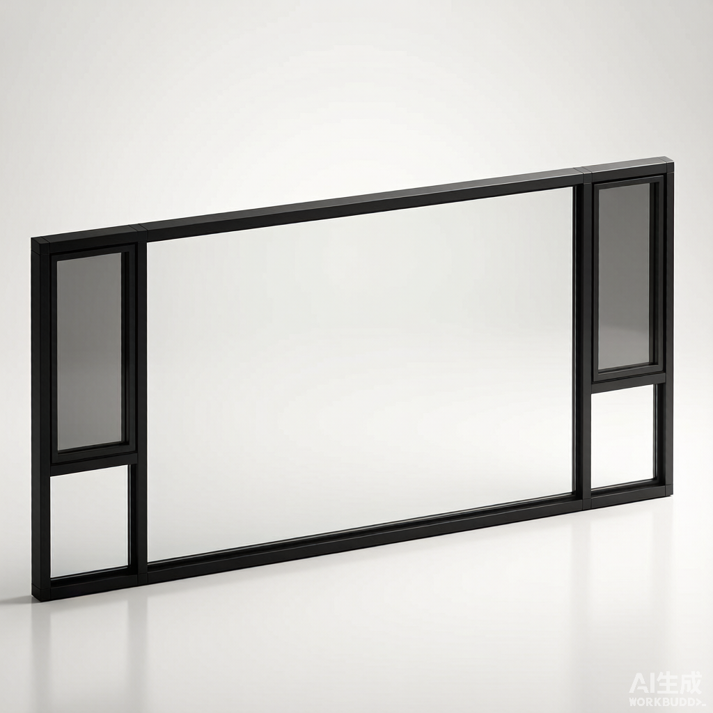
全景通风落地窗
全景通风落地窗（编号 ）是面向通用空间的门窗幕墙构件。可驱动遮阳、通风与开合类执行部件。构件共内置 25 项可调参数，覆盖几何尺寸、安装方式、外观配色与智能联动，典型如：窗洞总宽、窗洞总高、侧窗宽度、下固定窗高度、窗框进深、型材面宽、玻璃厚度、安装离地高度 等，均可在 BIMBase 属性面板中实时调整。所有参数均由属性（Attr）驱动，几何算法保持参数化一致，适用于方案比选、户型布置与智能场景演示。
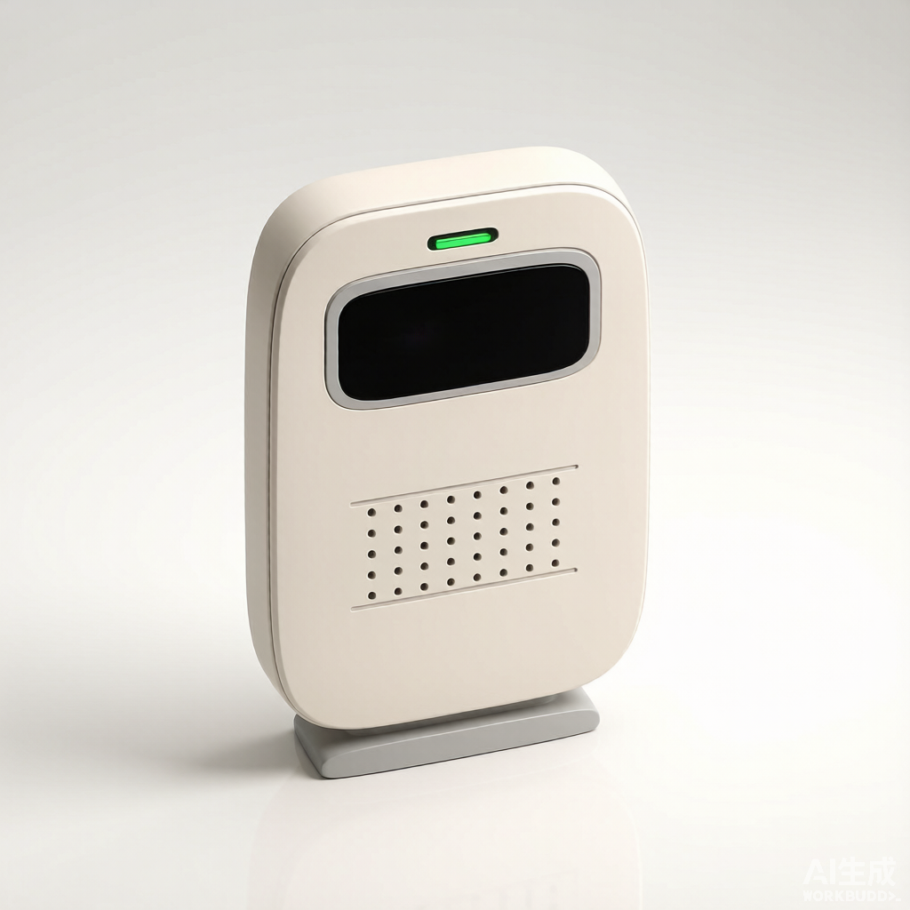
六合一环境传感器
六合一环境传感器（编号 ）是面向全屋的传感探测构件。实时汇总室内温湿度、空气质量与环境舒适度；支持家庭场景一键联动与人工切换演示。构件共内置 24 项可调参数，覆盖几何尺寸、安装方式、外观配色与智能联动，典型如：设备宽度、设备高度、设备厚度、安装方式、外观颜色、屏幕状态、温度、湿度 等，均可在 BIMBase 属性面板中实时调整。所有参数均由属性（Attr）驱动，几何算法保持参数化一致，适用于方案比选、户型布置与智能场景演示。
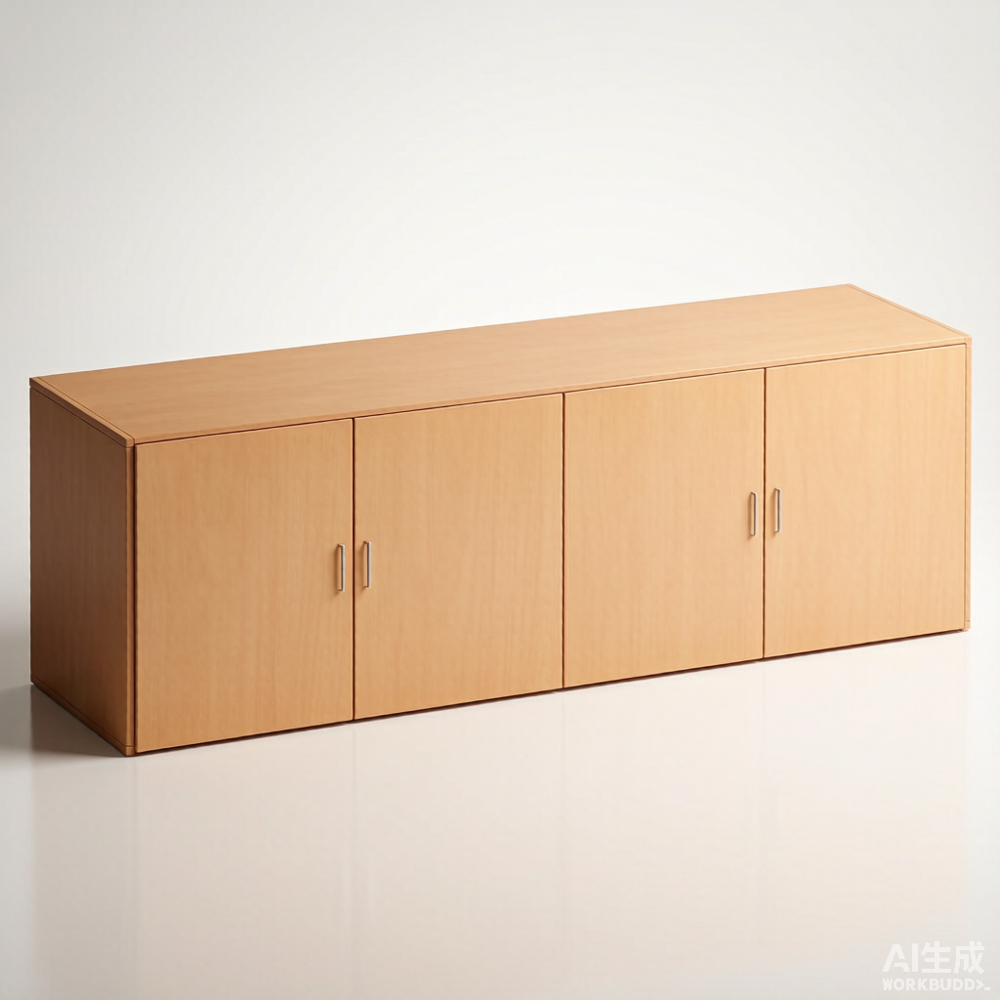
到顶厨房储物吊柜
到顶厨房储物吊柜（编号 ）是面向厨房的厨卫设备构件。对照明亮度、色温与照明场景进行参数化调节。构件共内置 15 项可调参数，覆盖几何尺寸、安装方式、外观配色与智能联动，典型如：柜体长度、柜体深度、柜体高度、柜底高度、板材厚度、柜门数量、内部层数、柜门状态 等，均可在 BIMBase 属性面板中实时调整。所有参数均由属性（Attr）驱动，几何算法保持参数化一致，适用于方案比选、户型布置与智能场景演示。
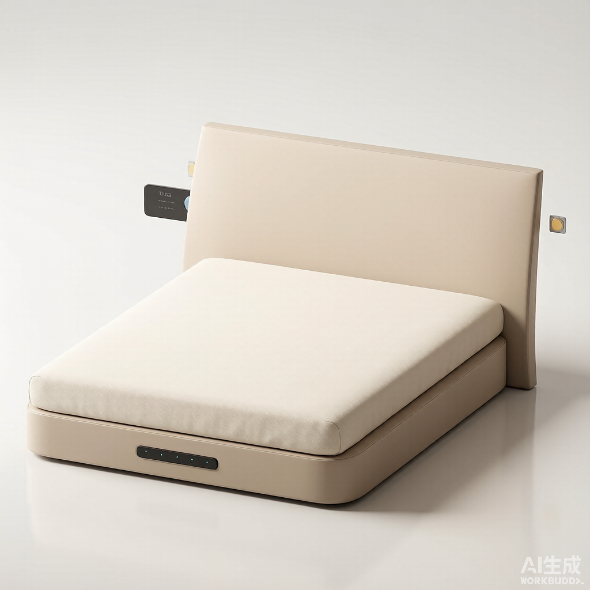
次卧小床纯家具版
次卧小床纯家具版（编号 B02）是面向全屋的家具软装构件。在 BIMBase 中按属性驱动几何与状态外观。构件共内置 12 项可调参数，覆盖几何尺寸、安装方式、外观配色与智能联动，典型如：床宽、床长、床面高度、床头总高、床垫厚度、床架颜色、软包颜色、床品颜色 等，均可在 BIMBase 属性面板中实时调整。所有参数均由属性（Attr）驱动，几何算法保持参数化一致，适用于方案比选、户型布置与智能场景演示。
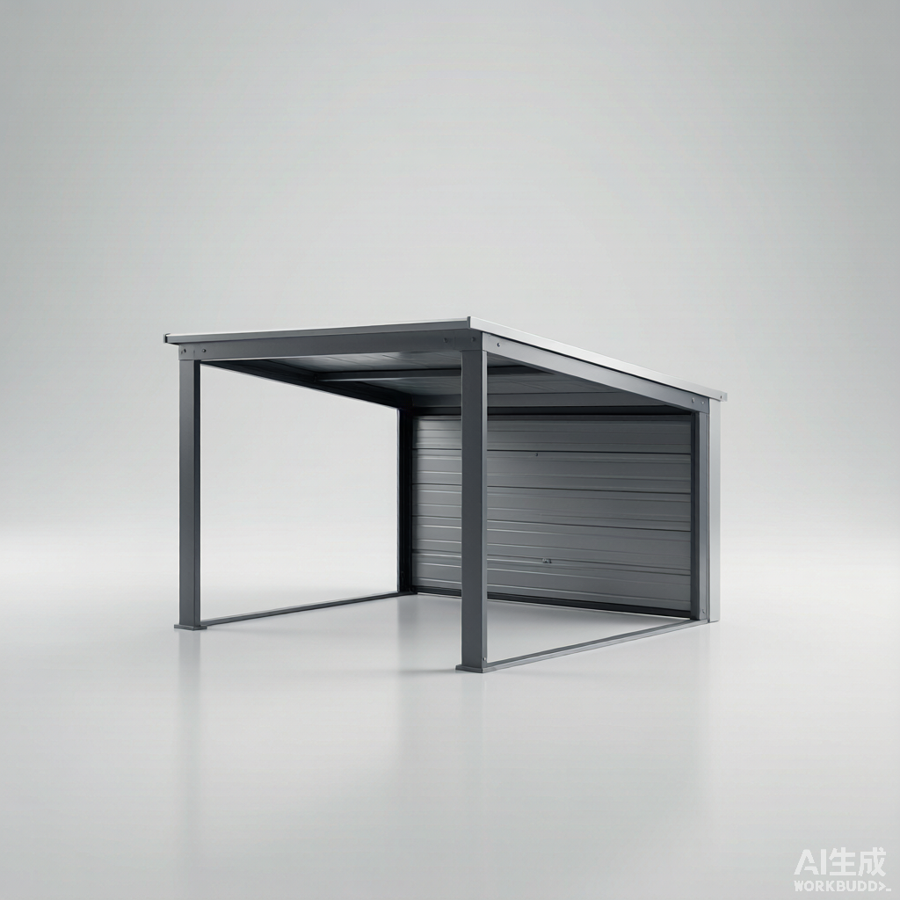
别墅庭院单车位光伏车库
别墅庭院单车位光伏车库（编号 E01）是面向庭院景观的能源设备构件。对照明亮度、色温与照明场景进行参数化调节；参与全屋能源与储能策略的可视化与调度。构件共内置 43 项可调参数，覆盖几何尺寸、安装方式、外观配色与智能联动，典型如：车库总宽、车库总进深、车库总高度、内部净高、立柱宽度、立柱深度、主梁宽度、主梁高度 等，均可在 BIMBase 属性面板中实时调整。所有参数均由属性（Attr）驱动，几何算法保持参数化一致，适用于方案比选、户型布置与智能场景演示。
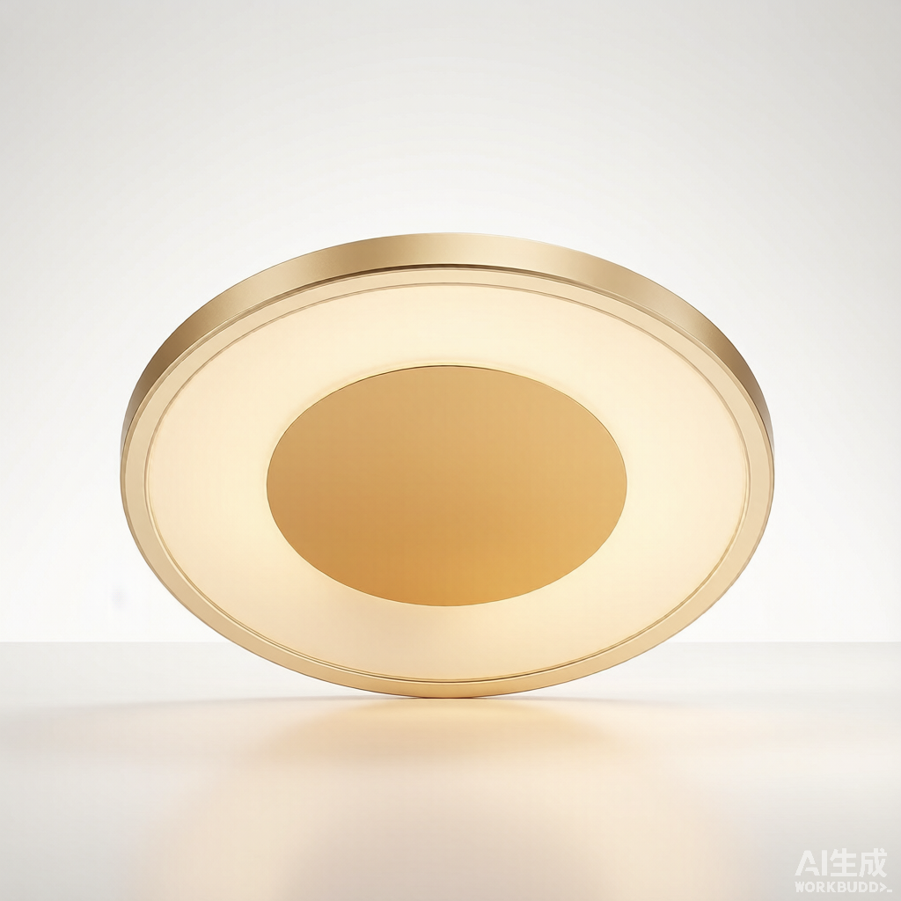
主卧头顶吸顶灯 V2
主卧头顶吸顶灯 V2（编号 C31）是面向主卧的照明灯具构件。对照明亮度、色温与照明场景进行参数化调节。构件共内置 11 项可调参数，覆盖几何尺寸、安装方式、外观配色与智能联动，典型如：灯具直径、灯具厚度、安装高度、灯具开关、亮度、色温、灯框颜色、装饰内圈 等，均可在 BIMBase 属性面板中实时调整。所有参数均由属性（Attr）驱动，几何算法保持参数化一致，适用于方案比选、户型布置与智能场景演示。
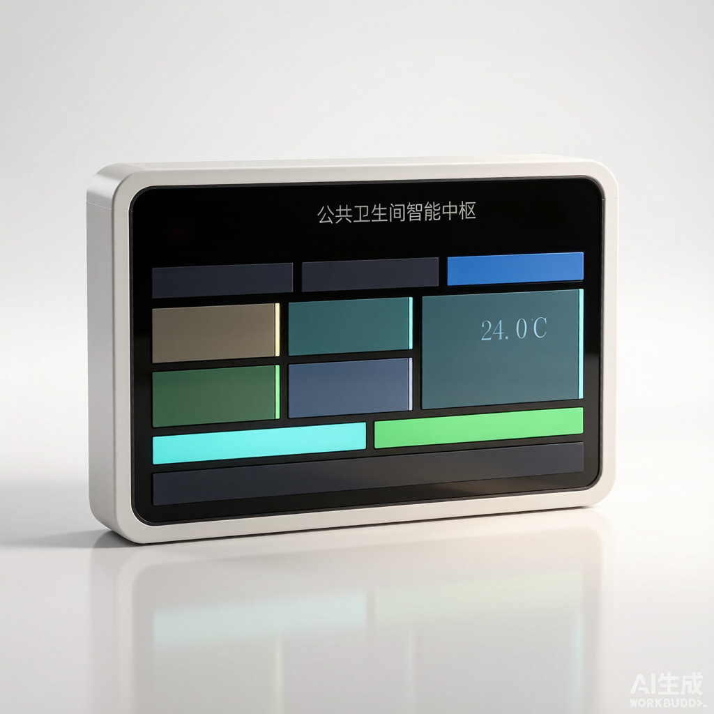
公共卫生间智能中枢
公共卫生间智能中枢（编号 C13）是面向卫生间的智能中枢构件。实时汇总室内温湿度、空气质量与环境舒适度；内置安防与健康类状态监测，可触发告警级别；对照明亮度、色温与照明场景进行参数化调节；参与全屋能源与储能策略的可视化与调度。构件共内置 40 项可调参数，覆盖几何尺寸、安装方式、外观配色与智能联动，典型如：外壳宽度、外壳高度、外壳厚度、安装方式、安装高度、外壳颜色、屏幕亮度、显示模式 等，均可在 BIMBase 属性面板中实时调整。所有参数均由属性（Attr）驱动，几何算法保持参数化一致，适用于方案比选、户型布置与智能场景演示。
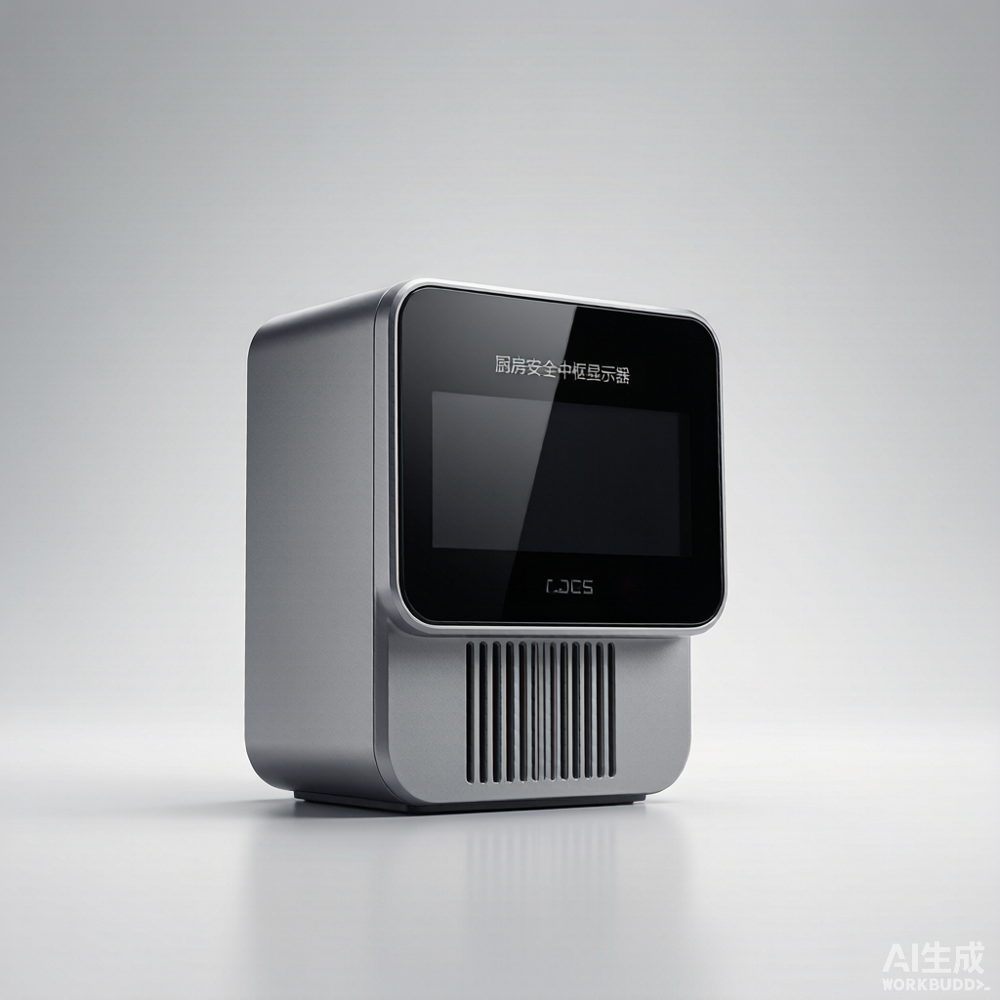
厨房安全中枢显示器
厨房安全中枢显示器（编号 C10）是面向厨房的智能中枢构件。实时汇总室内温湿度、空气质量与环境舒适度；支持家庭场景一键联动与人工切换演示；内置安防与健康类状态监测，可触发告警级别；对照明亮度、色温与照明场景进行参数化调节。构件共内置 39 项可调参数，覆盖几何尺寸、安装方式、外观配色与智能联动，典型如：设备宽度、设备高度、设备厚度、安装高度、安装方式、外壳材质、外壳颜色、屏幕亮度 等，均可在 BIMBase 属性面板中实时调整。所有参数均由属性（Attr）驱动，几何算法保持参数化一致，适用于方案比选、户型布置与智能场景演示。
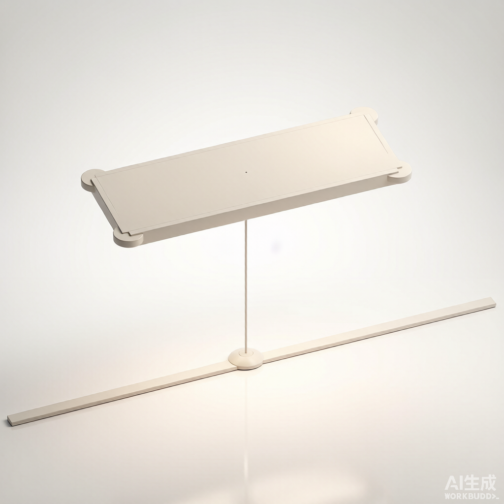
厨房智能灯具系统
厨房智能灯具系统（编号 C32）是面向厨房的照明灯具构件。支持家庭场景一键联动与人工切换演示；对照明亮度、色温与照明场景进行参数化调节。构件共内置 26 项可调参数，覆盖几何尺寸、安装方式、外观配色与智能联动，典型如：层高、主灯长度、主灯宽度、主灯厚度、吊柜底高度、操作台灯带长度、含中岛吊灯、中岛台面高度 等，均可在 BIMBase 属性面板中实时调整。所有参数均由属性（Attr）驱动，几何算法保持参数化一致，适用于方案比选、户型布置与智能场景演示。
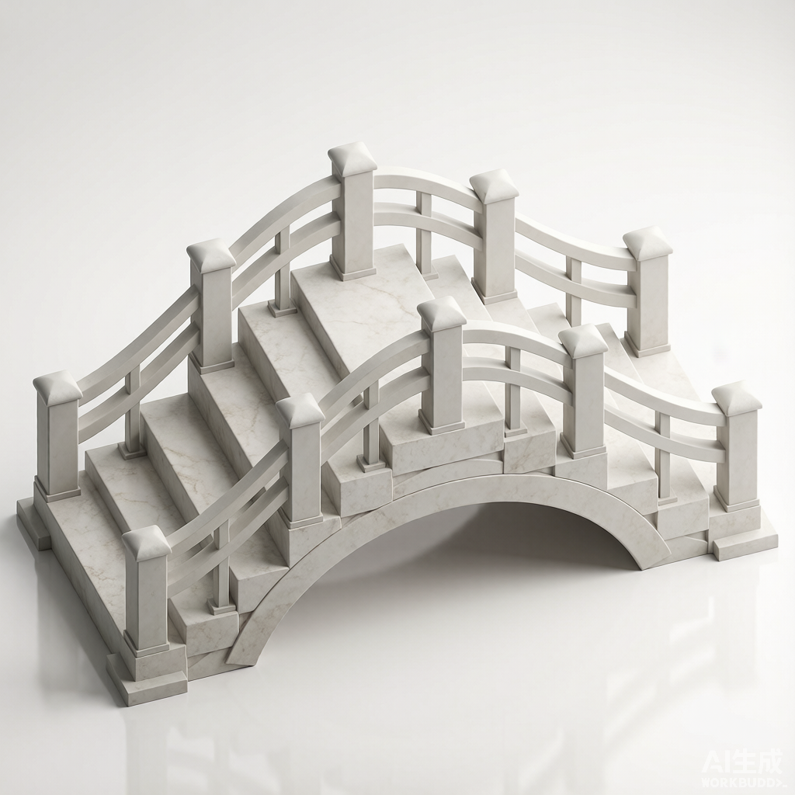
庭院参数化石拱桥
庭院参数化石拱桥（编号 ）是面向庭院景观的景观庭院构件。在 BIMBase 中按属性驱动几何与状态外观。构件共内置 15 项可调参数，覆盖几何尺寸、安装方式、外观配色与智能联动，典型如：桥体总长、桥面宽度、桥面拱起高度、桥面厚度、桥下净跨、桥下净高、栏杆高度、拱圈厚度 等，均可在 BIMBase 属性面板中实时调整。所有参数均由属性（Attr）驱动，几何算法保持参数化一致，适用于方案比选、户型布置与智能场景演示。
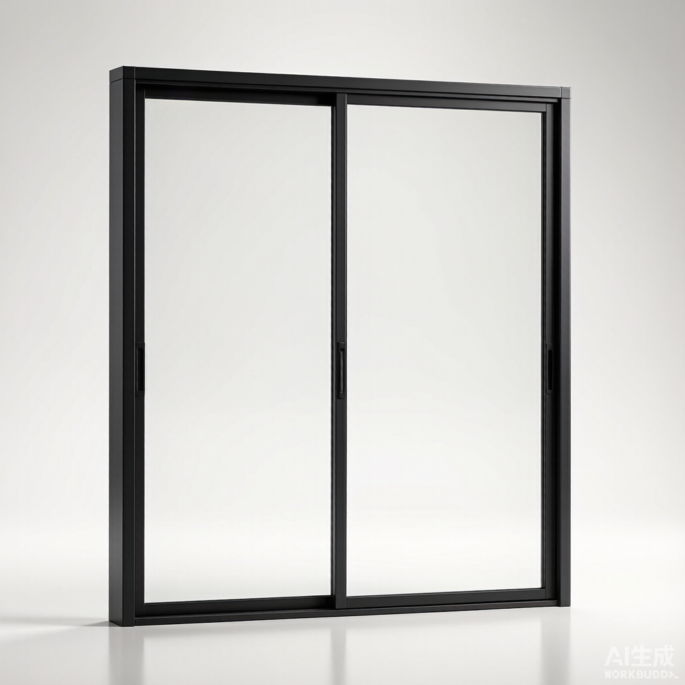
双扇玻璃推拉门
双扇玻璃推拉门（编号 ）是面向通用空间的门窗幕墙构件。在 BIMBase 中按属性驱动几何与状态外观。构件共内置 14 项可调参数，覆盖几何尺寸、安装方式、外观配色与智能联动，典型如：门总宽度、门总高度、墙体厚度、型材宽度、门扇厚度、门扇搭接量、开启侧、开启比例 等，均可在 BIMBase 属性面板中实时调整。所有参数均由属性（Attr）驱动，几何算法保持参数化一致，适用于方案比选、户型布置与智能场景演示。
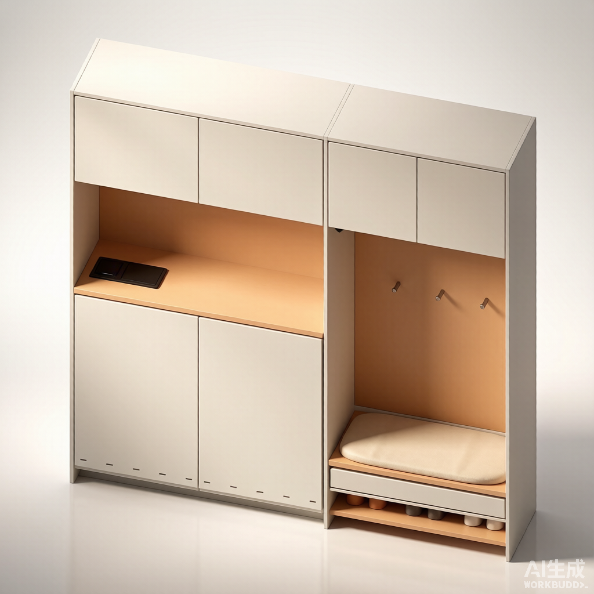
双机嵌入式洗烘储物柜
双机嵌入式洗烘储物柜（编号 ）是面向全屋的家具软装构件。在 BIMBase 中按属性驱动几何与状态外观。构件共内置 7 项可调参数，覆盖几何尺寸、安装方式、外观配色与智能联动，典型如：柜体总宽、柜体总深、柜体总高、左一门状态、左二门状态、右二门状态、右一门状态 等，均可在 BIMBase 属性面板中实时调整。所有参数均由属性（Attr）驱动，几何算法保持参数化一致，适用于方案比选、户型布置与智能场景演示。
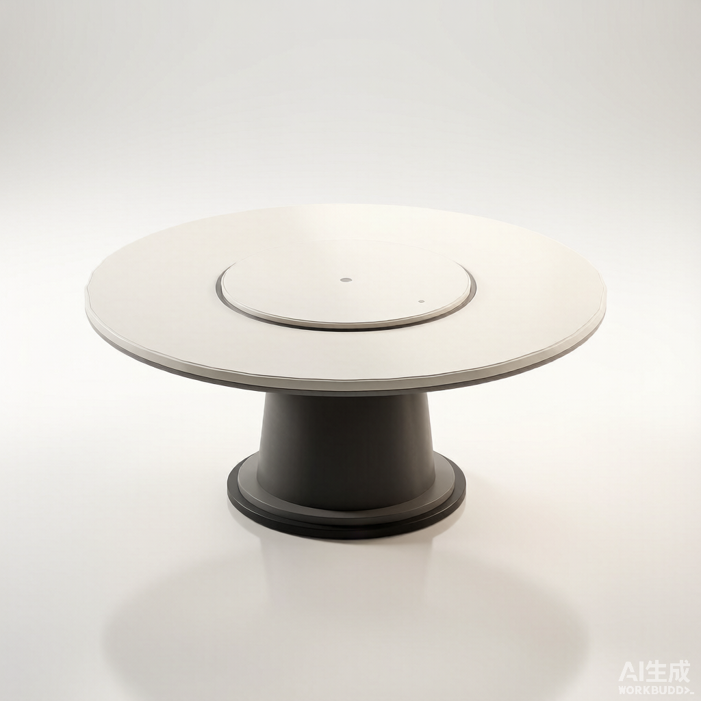
可变圆形六至八人餐桌
可变圆形六至八人餐桌（编号 ）是面向全屋的家具软装构件。在 BIMBase 中按属性驱动几何与状态外观。构件共内置 14 项可调参数，覆盖几何尺寸、安装方式、外观配色与智能联动，典型如：日常桌面直径、展开桌面直径、餐桌总高度、桌面厚度、底座直径、转盘直径、转盘厚度、使用模式 等，均可在 BIMBase 属性面板中实时调整。所有参数均由属性（Attr）驱动，几何算法保持参数化一致，适用于方案比选、户型布置与智能场景演示。
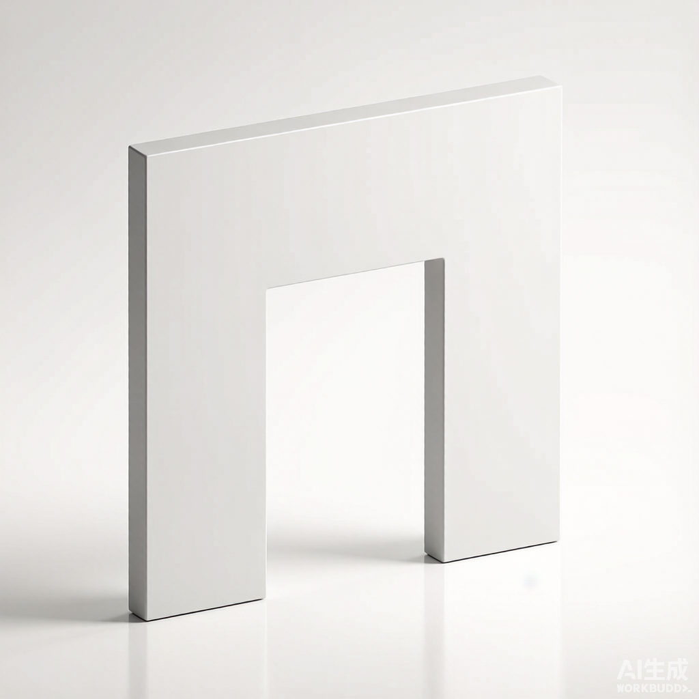
可调单双洞外墙
可调单双洞外墙（编号 ）是面向全屋的门窗幕墙构件。在 BIMBase 中按属性驱动几何与状态外观。构件共内置 28 项可调参数，覆盖几何尺寸、安装方式、外观配色与智能联动，典型如：洞口数量、墙体高度、墙体厚度、洞口1宽度、洞口1高度、洞口1底部墙体高度、洞口1左侧墙体宽度、洞口1右侧墙体宽度 等，均可在 BIMBase 属性面板中实时调整。所有参数均由属性（Attr）驱动，几何算法保持参数化一致，适用于方案比选、户型布置与智能场景演示。
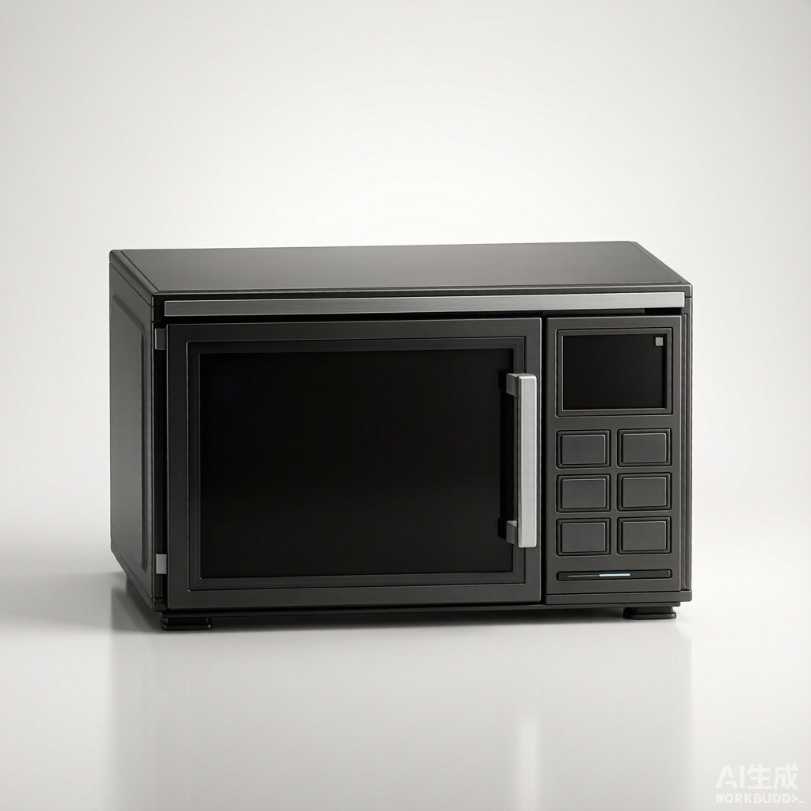
普通台式微波炉
普通台式微波炉（编号 ）是面向全屋的厨卫设备构件。对照明亮度、色温与照明场景进行参数化调节；参与全屋能源与储能策略的可视化与调度。构件共内置 23 项可调参数，覆盖几何尺寸、安装方式、外观配色与智能联动，典型如：机身宽度、机身深度、机身高度、运行状态、烹饪模式、微波功率、设定时间、解冻重量 等，均可在 BIMBase 属性面板中实时调整。所有参数均由属性（Attr）驱动，几何算法保持参数化一致，适用于方案比选、户型布置与智能场景演示。
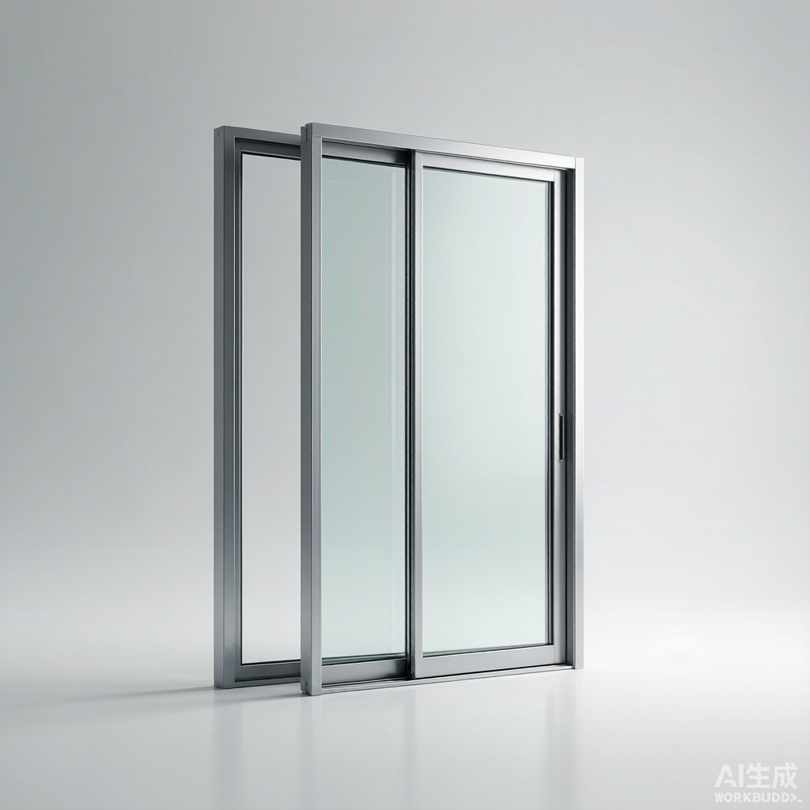
阳台1660右固定玻璃折叠移门
阳台1660右固定玻璃折叠移门（编号 ）是面向家政/阳台的门窗幕墙构件。在 BIMBase 中按属性驱动几何与状态外观。构件共内置 10 项可调参数，覆盖几何尺寸、安装方式、外观配色与智能联动，典型如：门总宽度、门总高度、墙体厚度、型材宽度、门扇厚度、下护板高度、折叠角度、玻璃类型 等，均可在 BIMBase 属性面板中实时调整。所有参数均由属性（Attr）驱动，几何算法保持参数化一致，适用于方案比选、户型布置与智能场景演示。
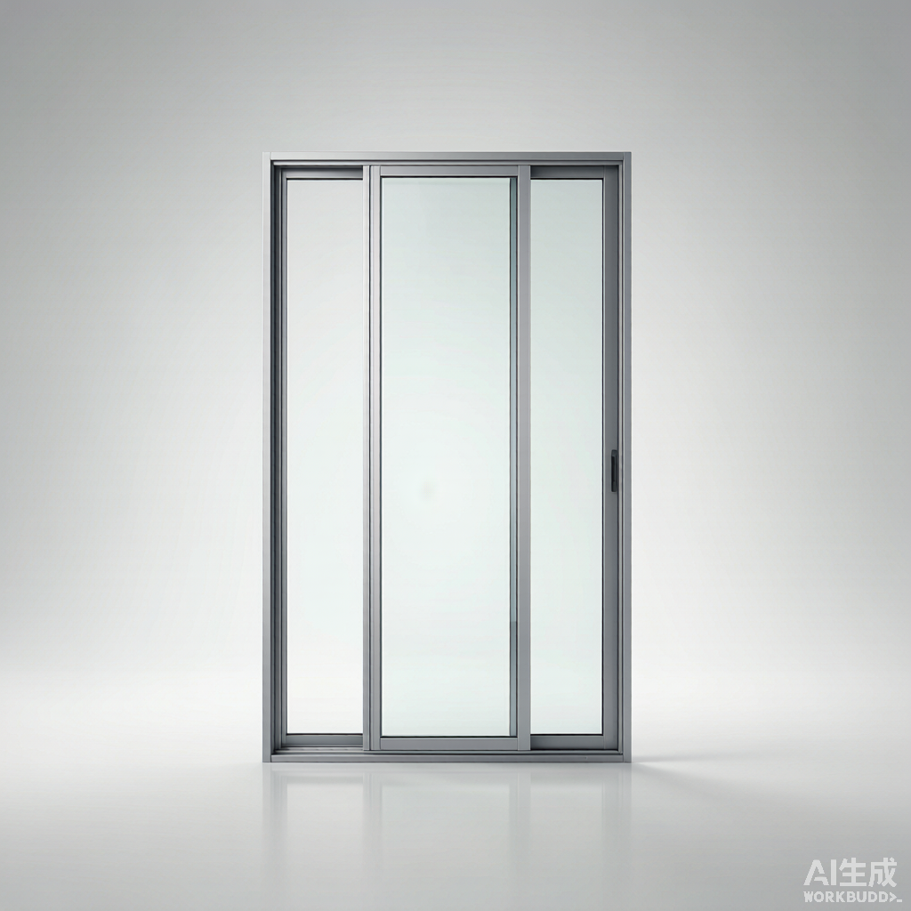
阳台1300右固定玻璃折叠移门
阳台1300右固定玻璃折叠移门（编号 ）是面向家政/阳台的门窗幕墙构件。在 BIMBase 中按属性驱动几何与状态外观。构件共内置 10 项可调参数，覆盖几何尺寸、安装方式、外观配色与智能联动，典型如：门总宽度、门总高度、墙体厚度、型材宽度、门扇厚度、下护板高度、折叠角度、玻璃类型 等，均可在 BIMBase 属性面板中实时调整。所有参数均由属性（Attr）驱动，几何算法保持参数化一致，适用于方案比选、户型布置与智能场景演示。
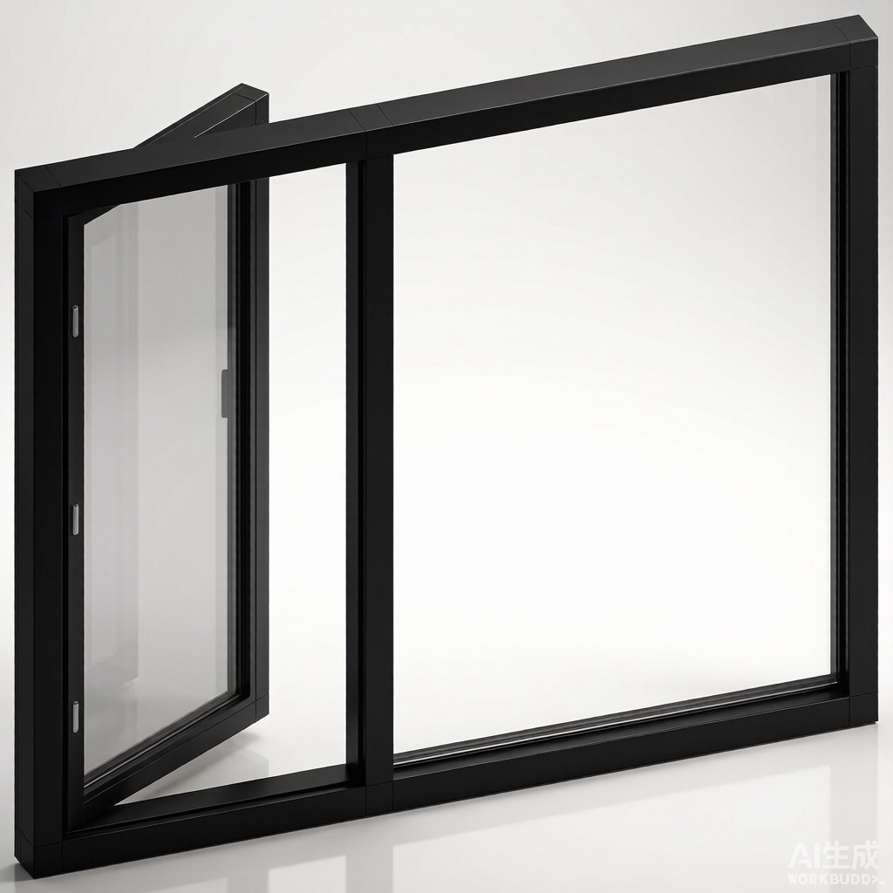
卧室固定加平开窗
卧室固定加平开窗（编号 ）是面向通用空间的门窗幕墙构件。在 BIMBase 中按属性驱动几何与状态外观。构件共内置 26 项可调参数，覆盖几何尺寸、安装方式、外观配色与智能联动，典型如：窗洞总宽、窗洞总高、固定玻璃占比、窗框进深、外框面宽、玻璃厚度、安装离地高度、开启扇位置 等，均可在 BIMBase 属性面板中实时调整。所有参数均由属性（Attr）驱动，几何算法保持参数化一致，适用于方案比选、户型布置与智能场景演示。
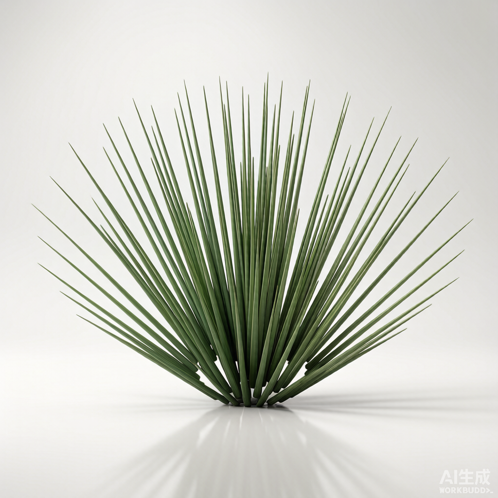
别墅庭院大型规整观赏草丛
别墅庭院大型规整观赏草丛（编号 L04）是面向庭院景观的景观庭院构件。在 BIMBase 中按属性驱动几何与状态外观。构件共内置 12 项可调参数，覆盖几何尺寸、安装方式、外观配色与智能联动，典型如：草丛高度、草丛冠幅、根部直径、叶片粗细、草丛类型、草叶疏密、草叶颜色、枯叶点缀 等，均可在 BIMBase 属性面板中实时调整。所有参数均由属性（Attr）驱动，几何算法保持参数化一致，适用于方案比选、户型布置与智能场景演示。
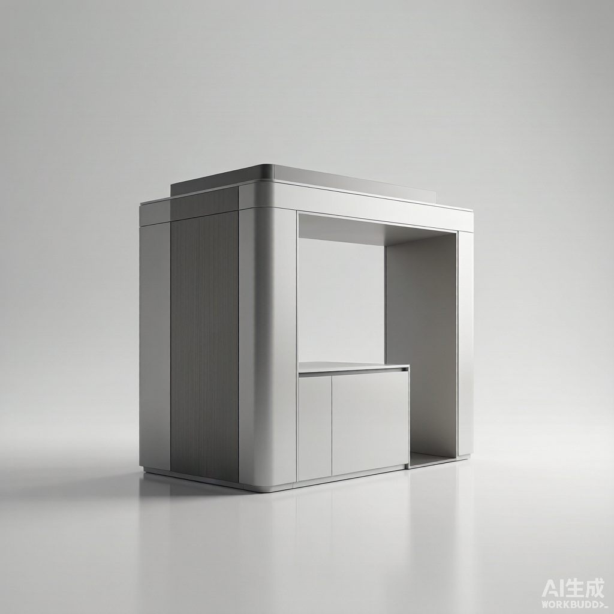
客厅综合主中枢（集成阳台与餐厅）
客厅综合主中枢（集成阳台与餐厅）（编号 C03-HUB）是面向客厅/餐厅的智能中枢构件。实时汇总室内温湿度、空气质量与环境舒适度；支持家庭场景一键联动与人工切换演示；内置安防与健康类状态监测，可触发告警级别；对照明亮度、色温与照明场景进行参数化调节；可驱动遮阳、通风与开合类执行部件；参与全屋能源与储能策略的可视化与调度；对接阳台家政设备，联动洗烘与晾衣流程。构件共内置 67 项可调参数，覆盖几何尺寸、安装方式、外观配色与智能联动，典型如：外壳宽度、外壳高度、设备厚度、屏幕比例、安装高度、外壳颜色、屏幕亮度、显示页面 等，均可在 BIMBase 属性面板中实时调整。所有参数均由属性（Attr）驱动，几何算法保持参数化一致，适用于方案比选、户型布置与智能场景演示。
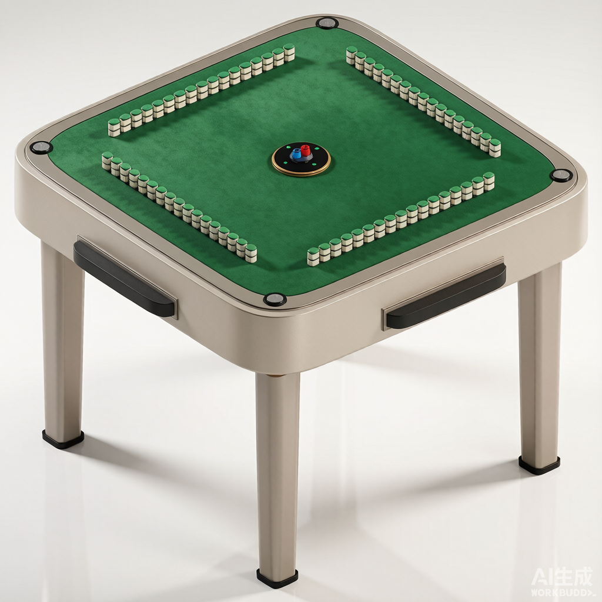
室内全自动麻将机
室内全自动麻将机（编号 ）是面向全屋的娱乐休闲构件。在 BIMBase 中按属性驱动几何与状态外观。构件共内置 34 项可调参数，覆盖几何尺寸、安装方式、外观配色与智能联动，典型如：麻将机总宽、麻将机总深、麻将机总高、机身厚度、桌腿截面、桌腿内缩、升牌口长度、整体移动X 等，均可在 BIMBase 属性面板中实时调整。所有参数均由属性（Attr）驱动，几何算法保持参数化一致，适用于方案比选、户型布置与智能场景演示。
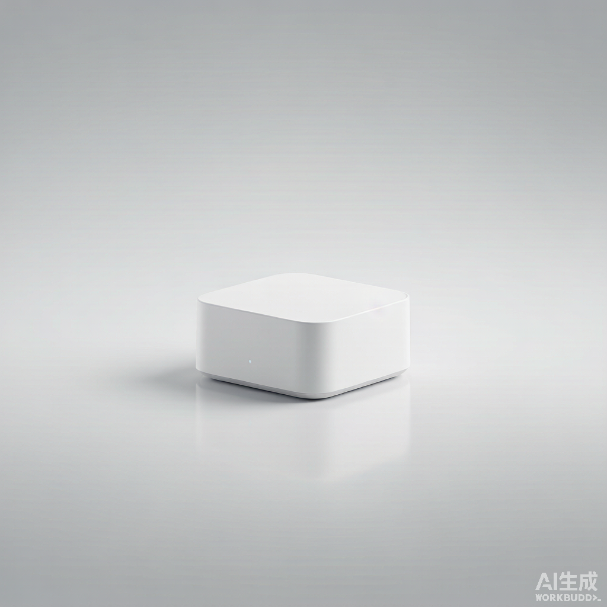
家庭智能边缘中枢网关
家庭智能边缘中枢网关（编号 ）是面向全屋的智能中枢构件。支持家庭场景一键联动与人工切换演示。构件共内置 39 项可调参数，覆盖几何尺寸、安装方式、外观配色与智能联动，典型如：设备宽度、设备深度、设备高度、外观颜色、网络状态、运行模式、显示内容、联网设备数量 等，均可在 BIMBase 属性面板中实时调整。所有参数均由属性（Attr）驱动，几何算法保持参数化一致，适用于方案比选、户型布置与智能场景演示。
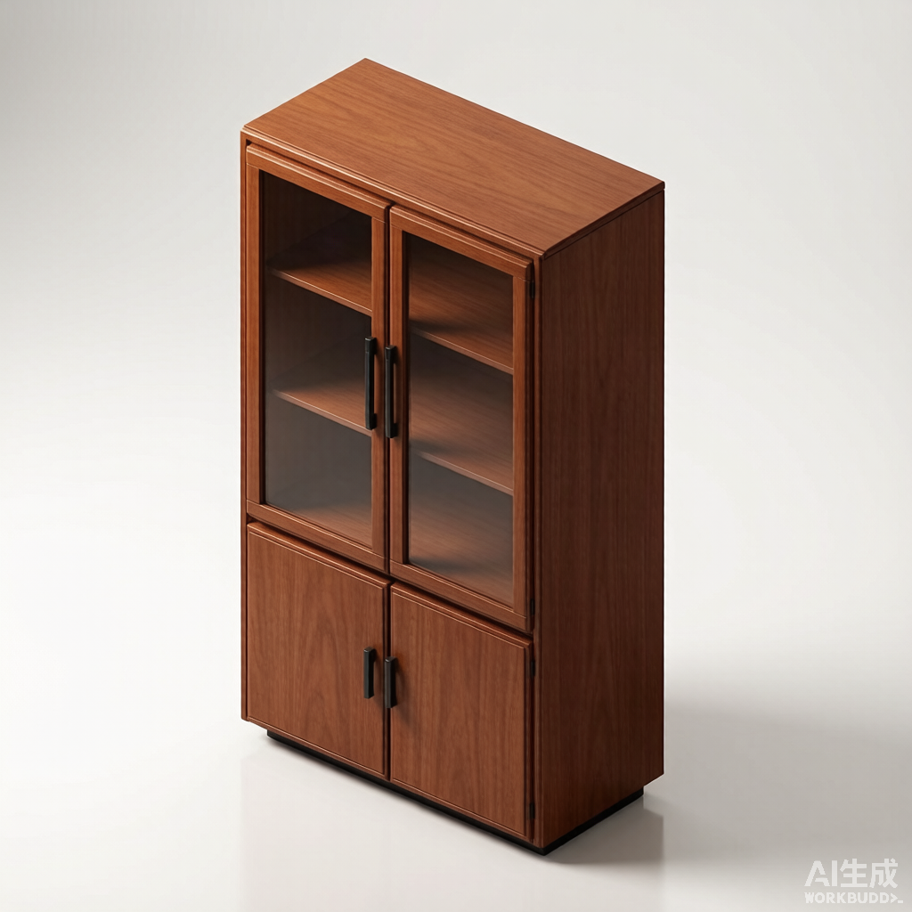
电视旁展示储物柜
电视旁展示储物柜（编号 C06）是面向全屋的家具软装构件。在 BIMBase 中按属性驱动几何与状态外观。构件共内置 8 项可调参数，覆盖几何尺寸、安装方式、外观配色与智能联动，典型如：柜体宽度、柜体深度、柜体高度、上部玻璃门状态、下部储物门状态、柜体颜色、玻璃类型、背板颜色 等，均可在 BIMBase 属性面板中实时调整。所有参数均由属性（Attr）驱动，几何算法保持参数化一致，适用于方案比选、户型布置与智能场景演示。
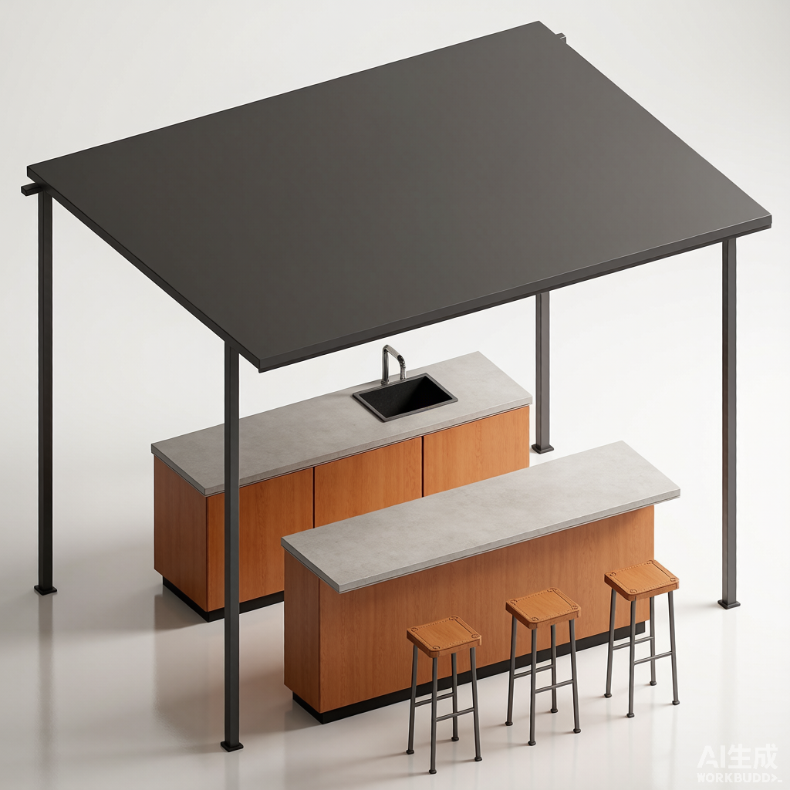
庭院户外休闲小吧台
庭院户外休闲小吧台（编号 ）是面向庭院景观的家具软装构件。支持家庭场景一键联动与人工切换演示。构件共内置 38 项可调参数，覆盖几何尺寸、安装方式、外观配色与智能联动，典型如：布置总长、布置总宽、构件总高、整体移动X、整体移动Y、整体移动Z、整体旋转角、遮阳棚长度 等，均可在 BIMBase 属性面板中实时调整。所有参数均由属性（Attr）驱动，几何算法保持参数化一致，适用于方案比选、户型布置与智能场景演示。
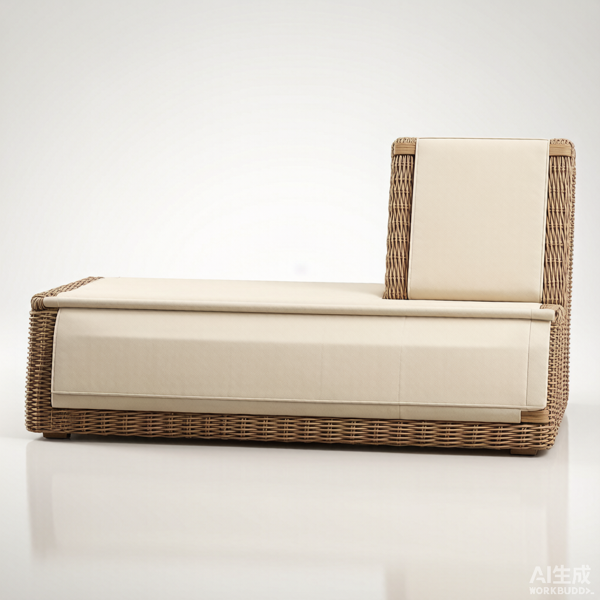
户外藤编L形转角沙发
户外藤编L形转角沙发（编号 ）是面向庭院景观的家具软装构件。在 BIMBase 中按属性驱动几何与状态外观。构件共内置 4 项可调参数，覆盖几何尺寸、安装方式、外观配色与智能联动，典型如：藤编颜色、坐垫颜色、构件类别、适用位置 等，均可在 BIMBase 属性面板中实时调整。所有参数均由属性（Attr）驱动，几何算法保持参数化一致，适用于方案比选、户型布置与智能场景演示。
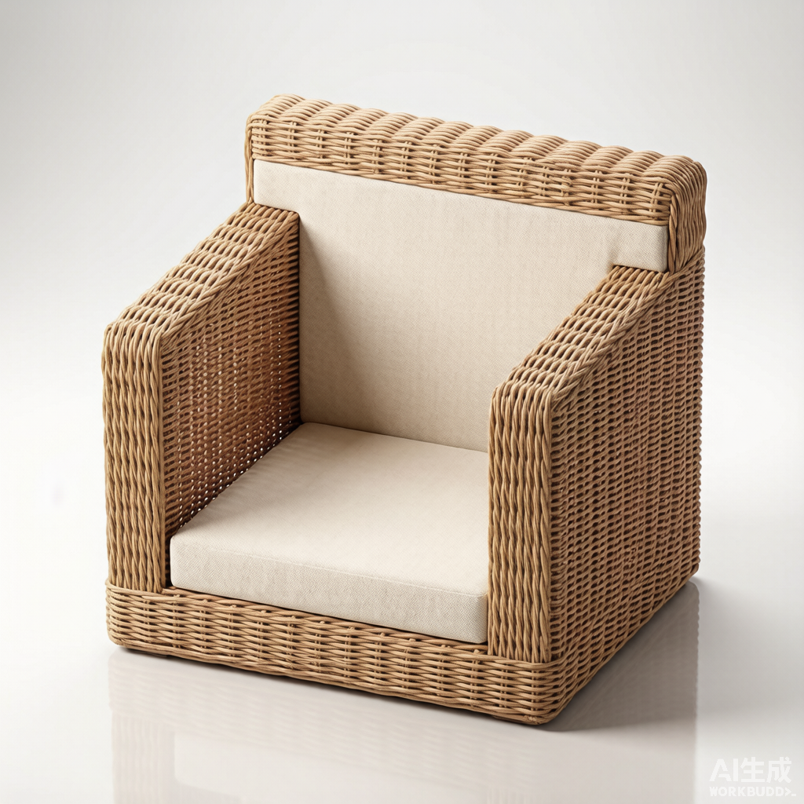
户外藤编休闲椅
户外藤编休闲椅（编号 ）是面向庭院景观的家具软装构件。在 BIMBase 中按属性驱动几何与状态外观。构件共内置 4 项可调参数，覆盖几何尺寸、安装方式、外观配色与智能联动，典型如：藤编颜色、坐垫颜色、构件类别、适用位置 等，均可在 BIMBase 属性面板中实时调整。所有参数均由属性（Attr）驱动，几何算法保持参数化一致，适用于方案比选、户型布置与智能场景演示。
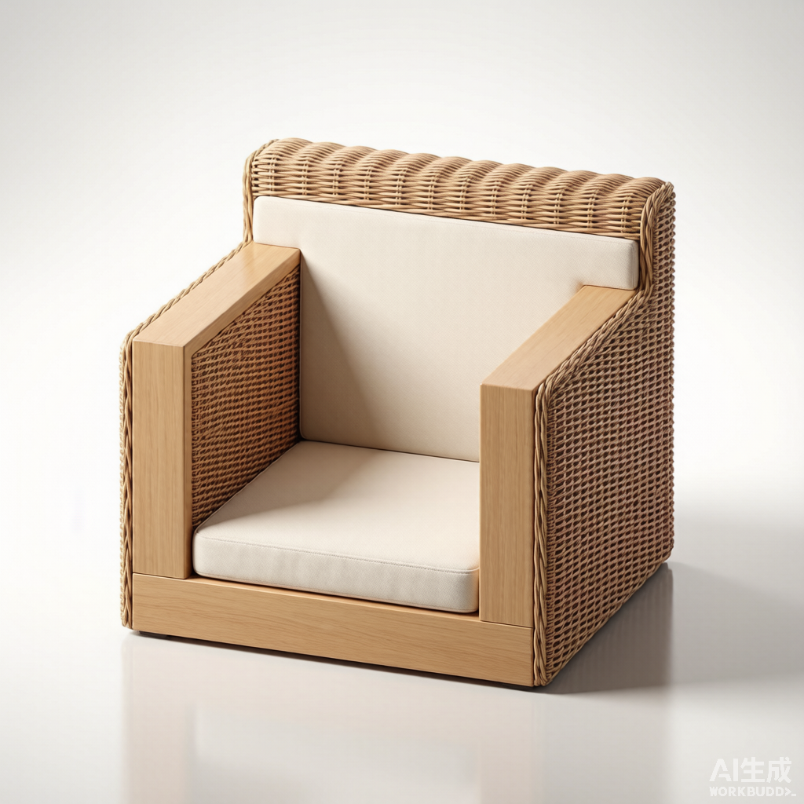
户外藤编单人椅
户外藤编单人椅（编号 ）是面向庭院景观的家具软装构件。在 BIMBase 中按属性驱动几何与状态外观。构件共内置 4 项可调参数，覆盖几何尺寸、安装方式、外观配色与智能联动，典型如：藤编颜色、坐垫颜色、构件类别、适用位置 等，均可在 BIMBase 属性面板中实时调整。所有参数均由属性（Attr）驱动，几何算法保持参数化一致，适用于方案比选、户型布置与智能场景演示。
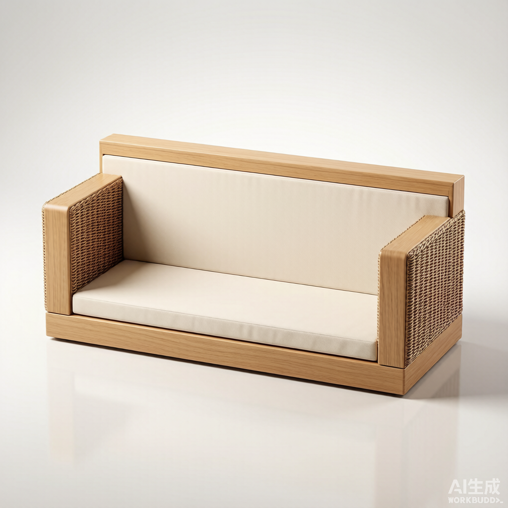
户外藤编双人沙发
户外藤编双人沙发（编号 ）是面向庭院景观的家具软装构件。在 BIMBase 中按属性驱动几何与状态外观。构件共内置 4 项可调参数，覆盖几何尺寸、安装方式、外观配色与智能联动，典型如：藤编颜色、坐垫颜色、构件类别、适用位置 等，均可在 BIMBase 属性面板中实时调整。所有参数均由属性（Attr）驱动，几何算法保持参数化一致，适用于方案比选、户型布置与智能场景演示。
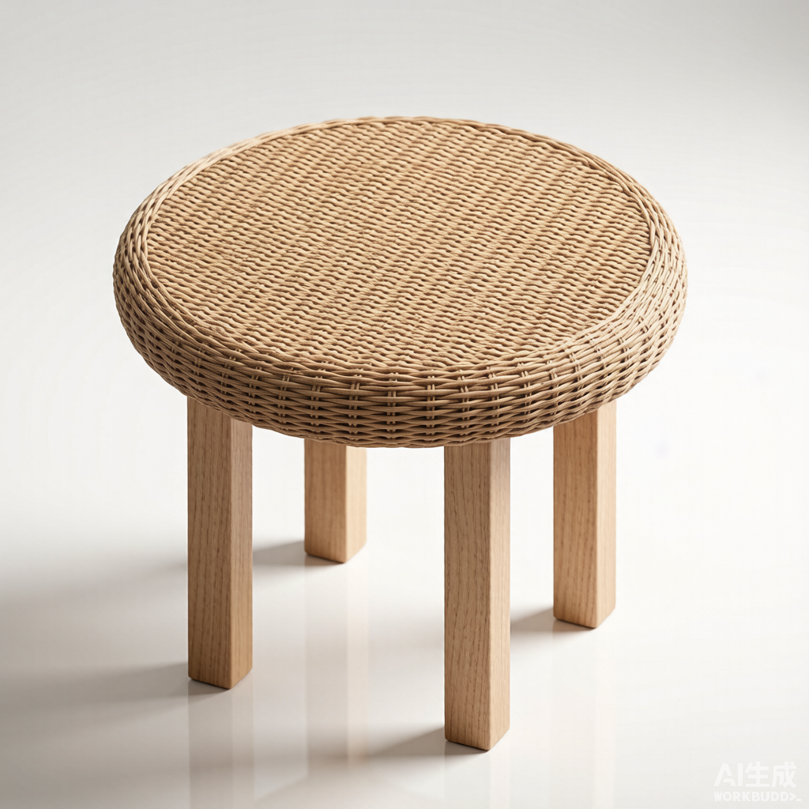
户外藤编小圆桌
户外藤编小圆桌（编号 ）是面向庭院景观的家具软装构件。在 BIMBase 中按属性驱动几何与状态外观。构件共内置 3 项可调参数，覆盖几何尺寸、安装方式、外观配色与智能联动，典型如：藤编颜色、构件类别、适用位置 等，均可在 BIMBase 属性面板中实时调整。所有参数均由属性（Attr）驱动，几何算法保持参数化一致，适用于方案比选、户型布置与智能场景演示。
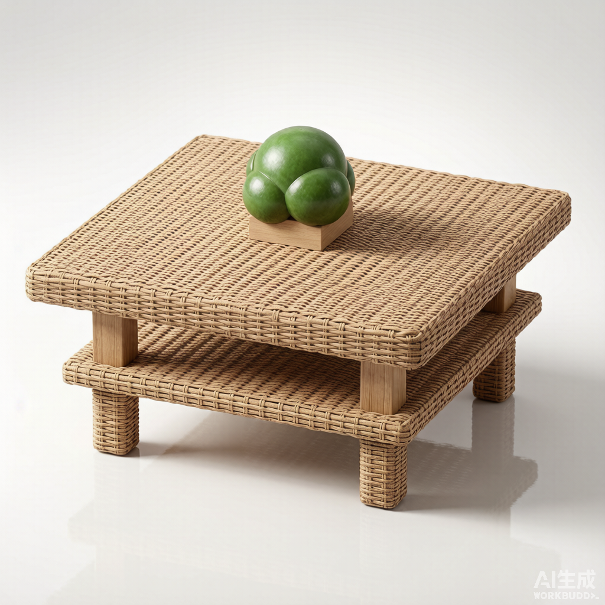
户外藤编方茶几
户外藤编方茶几（编号 ）是面向庭院景观的家具软装构件。在 BIMBase 中按属性驱动几何与状态外观。构件共内置 4 项可调参数，覆盖几何尺寸、安装方式、外观配色与智能联动，典型如：藤编颜色、含绿植、构件类别、适用位置 等，均可在 BIMBase 属性面板中实时调整。所有参数均由属性（Attr）驱动，几何算法保持参数化一致，适用于方案比选、户型布置与智能场景演示。
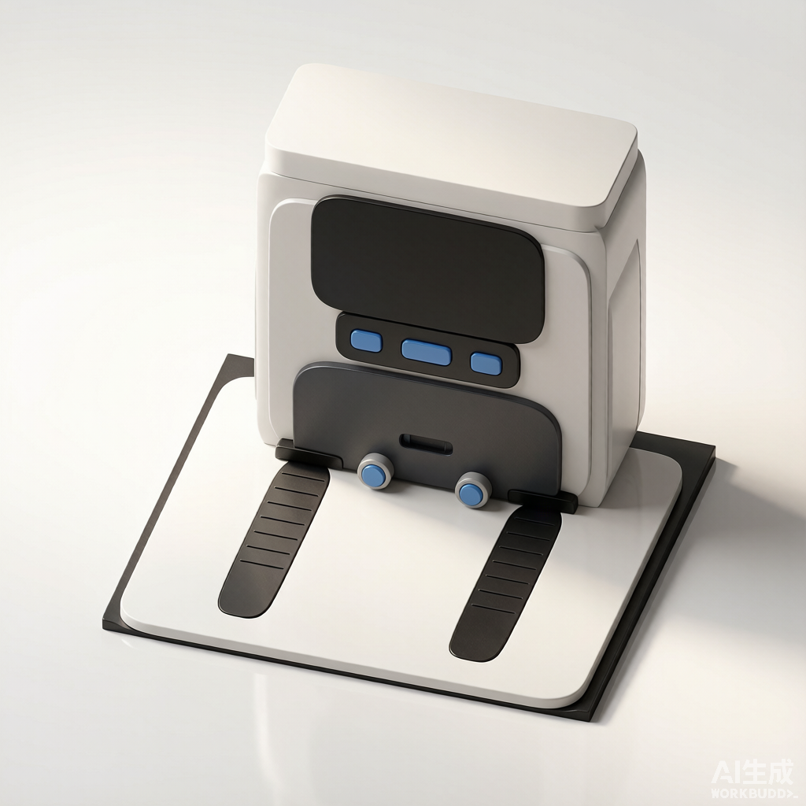
扫地机器人充电桩
扫地机器人充电桩（编号 ）是面向能源区的能源设备构件。实时汇总室内温湿度、空气质量与环境舒适度；参与全屋能源与储能策略的可视化与调度。构件共内置 24 项可调参数，覆盖几何尺寸、安装方式、外观配色与智能联动，典型如：充电桩宽度、充电桩深度、充电桩高度、离墙间距、电源线长度、外观颜色、面板材质、电源状态 等，均可在 BIMBase 属性面板中实时调整。所有参数均由属性（Attr）驱动，几何算法保持参数化一致，适用于方案比选、户型布置与智能场景演示。
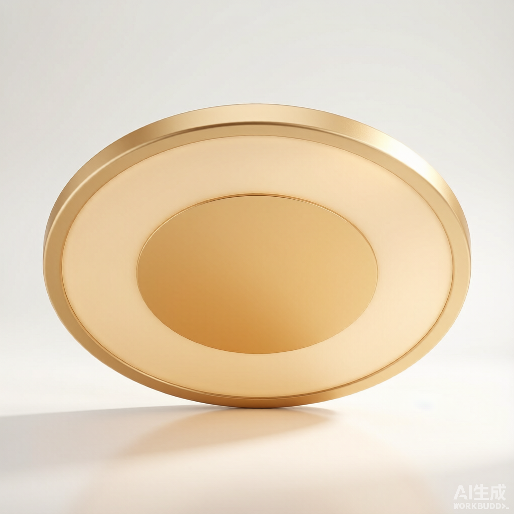
书房头顶护眼吸顶灯
书房头顶护眼吸顶灯（编号 C33）是面向书房的照明灯具构件。对照明亮度、色温与照明场景进行参数化调节。构件共内置 15 项可调参数，覆盖几何尺寸、安装方式、外观配色与智能联动，典型如：灯具长度、灯具宽度、灯具厚度、安装高度、圆角大小、灯具开关、亮度、色温 等，均可在 BIMBase 属性面板中实时调整。所有参数均由属性（Attr）驱动，几何算法保持参数化一致，适用于方案比选、户型布置与智能场景演示。
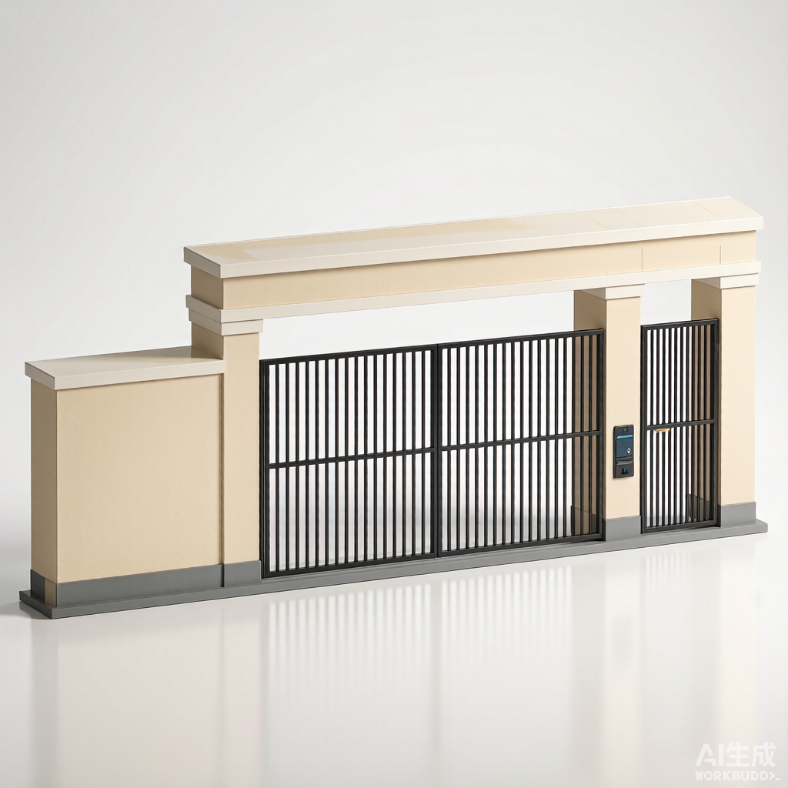
新中式院落式高端社区大门
新中式院落式高端社区大门（编号 ）是面向通用空间的门窗幕墙构件。在 BIMBase 中按属性驱动几何与状态外观。构件共内置 13 项可调参数，覆盖几何尺寸、安装方式、外观配色与智能联动，典型如：大门总长度、大门总宽度、大门总高度、中央门楼长度、车行门净宽、人行门净宽、车行门高度、人行门高度 等，均可在 BIMBase 属性面板中实时调整。所有参数均由属性（Attr）驱动，几何算法保持参数化一致，适用于方案比选、户型布置与智能场景演示。
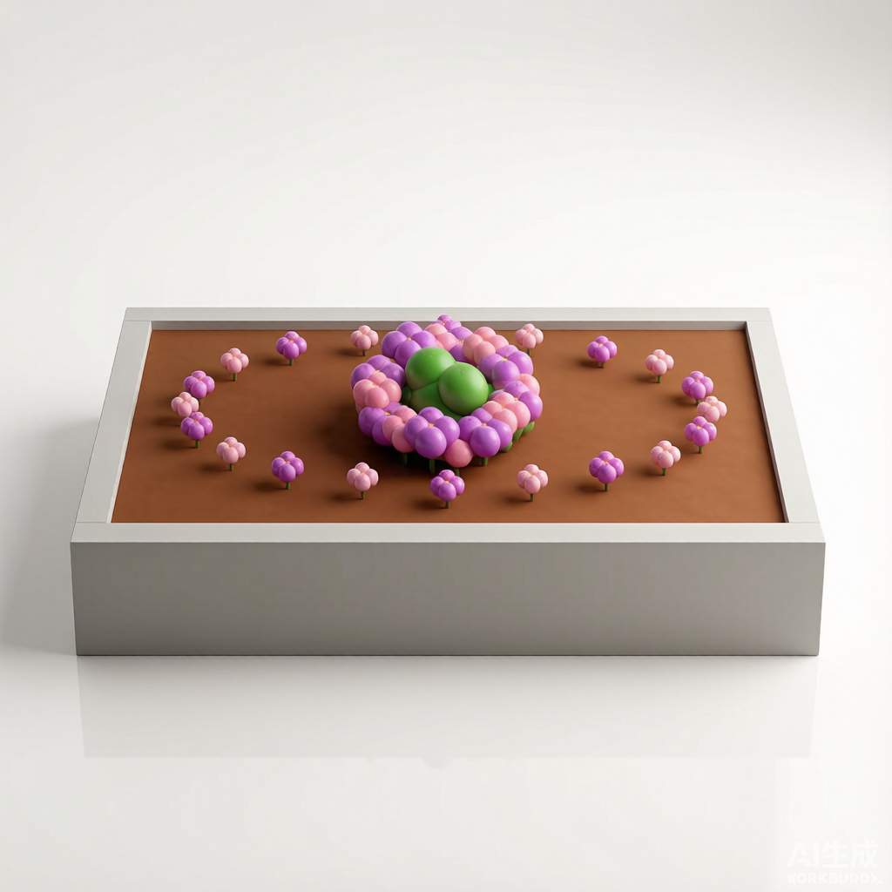
方块花坛（voxel 方块风格）
方块花坛（voxel 方块风格）（编号 B04）是面向全屋的景观庭院构件。在 BIMBase 中按属性驱动几何与状态外观。构件共内置 9 项可调参数，覆盖几何尺寸、安装方式、外观配色与智能联动，典型如：形状、长度、宽度、池壁高、花色方案、花朵密度、池壁材质色、构件类别 等，均可在 BIMBase 属性面板中实时调整。所有参数均由属性（Attr）驱动，几何算法保持参数化一致，适用于方案比选、户型布置与智能场景演示。
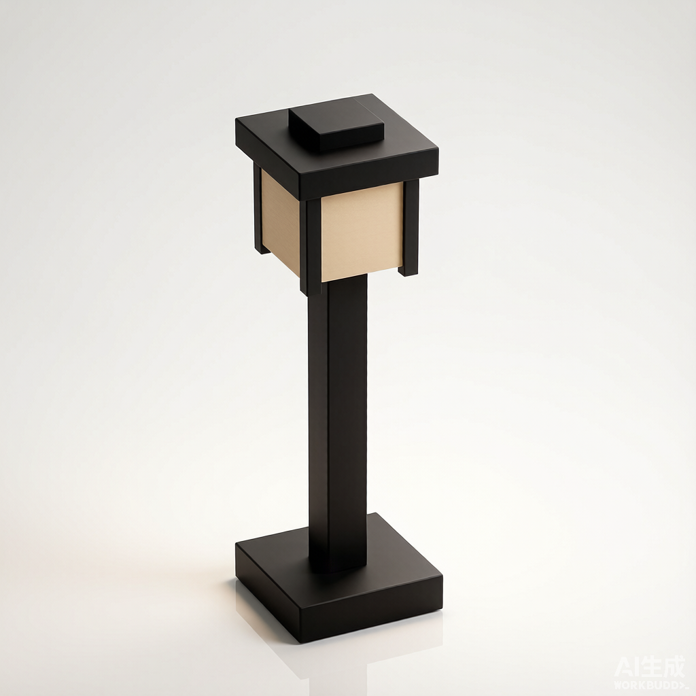
方块草坪灯（voxel 方块风格·智能）
方块草坪灯（voxel 方块风格·智能）（编号 B06）是面向全屋的照明灯具构件。支持家庭场景一键联动与人工切换演示；对照明亮度、色温与照明场景进行参数化调节。构件共内置 12 项可调参数，覆盖几何尺寸、安装方式、外观配色与智能联动，典型如：灯高、灯头边长、造型、灯体色、灯具开关、亮度、色温、系统模式 等，均可在 BIMBase 属性面板中实时调整。所有参数均由属性（Attr）驱动，几何算法保持参数化一致，适用于方案比选、户型布置与智能场景演示。
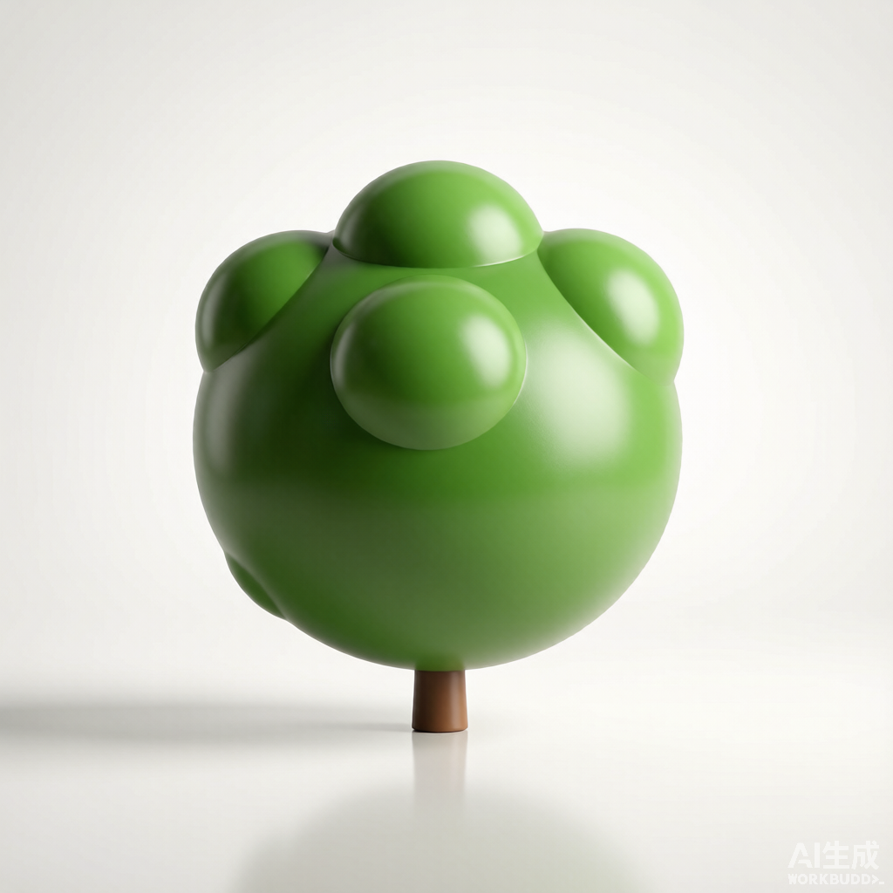
L12_景观灌木球
L12_景观灌木球（编号 L12）是面向庭院景观的景观庭院构件。在 BIMBase 中按属性驱动几何与状态外观。构件共内置 10 项可调参数，覆盖几何尺寸、安装方式、外观配色与智能联动，典型如：球径、露干高度、树干直径、冠形饱满度、品种、造型、长势、构件类别 等，均可在 BIMBase 属性面板中实时调整。所有参数均由属性（Attr）驱动，几何算法保持参数化一致，适用于方案比选、户型布置与智能场景演示。
L13_景观花坛
L13_景观花坛（编号 L13）是面向庭院景观的景观庭院构件。在 BIMBase 中按属性驱动几何与状态外观。构件共内置 13 项可调参数，覆盖几何尺寸、安装方式、外观配色与智能联动，典型如：花坛长、花坛宽、池高、压顶宽、形状、池壁材质、花色方案、中心造型 等，均可在 BIMBase 属性面板中实时调整。所有参数均由属性（Attr）驱动，几何算法保持参数化一致，适用于方案比选、户型布置与智能场景演示。
智能一体式工作站水槽
智能一体式工作站水槽（编号 ）是面向全屋的厨卫设备构件。支持家庭场景一键联动与人工切换演示；内置安防与健康类状态监测，可触发告警级别；对照明亮度、色温与照明场景进行参数化调节。构件共内置 33 项可调参数，覆盖几何尺寸、安装方式、外观配色与智能联动，典型如：外形宽度、外形长度、盆体深度、安装方式、安装高度Z、整体移动X、整体移动Y、整体旋转角 等，均可在 BIMBase 属性面板中实时调整。所有参数均由属性（Attr）驱动，几何算法保持参数化一致，适用于方案比选、户型布置与智能场景演示。
智能一体式马桶
智能一体式马桶（编号 ）是面向卫生间的厨卫设备构件。实时汇总室内温湿度、空气质量与环境舒适度；内置安防与健康类状态监测，可触发告警级别。构件共内置 17 项可调参数，覆盖几何尺寸、安装方式、外观配色与智能联动，典型如：马桶长度、马桶宽度、座面高度、整机高度、陶瓷颜色、座圈颜色、盖板状态、工作模式 等，均可在 BIMBase 属性面板中实时调整。所有参数均由属性（Attr）驱动，几何算法保持参数化一致，适用于方案比选、户型布置与智能场景演示。
智能阳台休闲躺椅
智能阳台休闲躺椅（编号 ）是面向家政/阳台的家具软装构件。在 BIMBase 中按属性驱动几何与状态外观。构件共内置 19 项可调参数，覆盖几何尺寸、安装方式、外观配色与智能联动，典型如：躺椅宽度、躺椅总长、座面高度、座面净宽、靠背长度、额定承重、姿态模式、自定义靠背角度 等，均可在 BIMBase 属性面板中实时调整。所有参数均由属性（Attr）驱动，几何算法保持参数化一致，适用于方案比选、户型布置与智能场景演示。
别墅庭院智能充电桩
别墅庭院智能充电桩（编号 E02）是面向庭院景观的能源设备构件。参与全屋能源与储能策略的可视化与调度。构件共内置 20 项可调参数，覆盖几何尺寸、安装方式、外观配色与智能联动，典型如：总高、主体宽度、主体深度、底座宽度、底座深度、底座高度、安装方向、充电枪侧别 等，均可在 BIMBase 属性面板中实时调整。所有参数均由属性（Attr）驱动，几何算法保持参数化一致，适用于方案比选、户型布置与智能场景演示。
智能光电感烟探测器
智能光电感烟探测器（编号 ）是面向全屋的传感探测构件。支持家庭场景一键联动与人工切换演示；内置安防与健康类状态监测，可触发告警级别。构件共内置 27 项可调参数，覆盖几何尺寸、安装方式、外观配色与智能联动，典型如：设备直径、设备高度、安装方式、安装高度、保护半径、烟雾浓度、预警阈值、报警阈值 等，均可在 BIMBase 属性面板中实时调整。所有参数均由属性（Attr）驱动，几何算法保持参数化一致，适用于方案比选、户型布置与智能场景演示。
厨房智能冰箱
厨房智能冰箱（编号 ）是面向厨房的厨卫设备构件。实时汇总室内温湿度、空气质量与环境舒适度。构件共内置 22 项可调参数，覆盖几何尺寸、安装方式、外观配色与智能联动，典型如：冰箱宽度、冰箱深度、冰箱高度、总容积、外观颜色、外观材质、冷藏门状态、冷冻门状态 等，均可在 BIMBase 属性面板中实时调整。所有参数均由属性（Attr）驱动，几何算法保持参数化一致，适用于方案比选、户型布置与智能场景演示。
智能升降书桌
智能升降书桌（编号 ）是面向全屋的家具软装构件。支持家庭场景一键联动与人工切换演示；对照明亮度、色温与照明场景进行参数化调节；参与全屋能源与储能策略的可视化与调度。构件共内置 27 项可调参数，覆盖几何尺寸、安装方式、外观配色与智能联动，典型如：书桌宽度、书桌深度、使用模式、当前桌面高度、升降状态、升降步长、防夹状态、场景模式 等，均可在 BIMBase 属性面板中实时调整。所有参数均由属性（Attr）驱动，几何算法保持参数化一致，适用于方案比选、户型布置与智能场景演示。
智能升降厨房岛台 V3.2
智能升降厨房岛台 V3.2（编号 K01）是面向厨房的厨卫设备构件。支持家庭场景一键联动与人工切换演示；内置安防与健康类状态监测，可触发告警级别；对照明亮度、色温与照明场景进行参数化调节；参与全屋能源与储能策略的可视化与调度。构件共内置 62 项可调参数，覆盖几何尺寸、安装方式、外观配色与智能联动，典型如：岛台长度、岛台深度、固定台面高度、台面厚度、踢脚高度、固定湿区长度、整体移动X、整体移动Y 等，均可在 BIMBase 属性面板中实时调整。所有参数均由属性（Attr）驱动，几何算法保持参数化一致，适用于方案比选、户型布置与智能场景演示。
智能升降晾衣系统
智能升降晾衣系统（编号 B01）是面向全屋的厨卫设备构件。实时汇总室内温湿度、空气质量与环境舒适度；支持家庭场景一键联动与人工切换演示；对照明亮度、色温与照明场景进行参数化调节；参与全屋能源与储能策略的可视化与调度；对接阳台家政设备，联动洗烘与晾衣流程。构件共内置 61 项可调参数，覆盖几何尺寸、安装方式、外观配色与智能联动，典型如：整体移动X、整体移动Y、整体移动Z、整体旋转角、主机长度、主机宽度、主机厚度、晾杆总长 等，均可在 BIMBase 属性面板中实时调整。所有参数均由属性（Attr）驱动，几何算法保持参数化一致，适用于方案比选、户型布置与智能场景演示。
智能单人休闲沙发
智能单人休闲沙发（编号 ）是面向全屋的家具软装构件。实时汇总室内温湿度、空气质量与环境舒适度；参与全屋能源与储能策略的可视化与调度。构件共内置 38 项可调参数，覆盖几何尺寸、安装方式、外观配色与智能联动，典型如：沙发宽度、沙发深度、沙发高度、座面高度、额定承重、软包颜色、面料材质、结构风格 等，均可在 BIMBase 属性面板中实时调整。所有参数均由属性（Attr）驱动，几何算法保持参数化一致，适用于方案比选、户型布置与智能场景演示。
轻奢智能双开入户门 V4
轻奢智能双开入户门 V4（编号 Q01）是面向通用空间的门窗幕墙构件。支持家庭场景一键联动与人工切换演示。构件共内置 20 项可调参数，覆盖几何尺寸、安装方式、外观配色与智能联动，典型如：门框外包宽度、门框外包高度、门扇厚度、门体配色、装饰样式、门状态、锁定状态、识别方式 等，均可在 BIMBase 属性面板中实时调整。所有参数均由属性（Attr）驱动，几何算法保持参数化一致，适用于方案比选、户型布置与智能场景演示。
智能双抽屉全嵌式洗碗机
智能双抽屉全嵌式洗碗机（编号 ）是面向全屋的厨卫设备构件。支持家庭场景一键联动与人工切换演示；对照明亮度、色温与照明场景进行参数化调节；对接阳台家政设备，联动洗烘与晾衣流程。构件共内置 38 项可调参数，覆盖几何尺寸、安装方式、外观配色与智能联动，典型如：机身宽度、机身深度、机身高度、设备位尺寸、整体移动X、整体移动Y、整体移动Z、整体旋转角 等，均可在 BIMBase 属性面板中实时调整。所有参数均由属性（Attr）驱动，几何算法保持参数化一致，适用于方案比选、户型布置与智能场景演示。
智能双灶燃气灶
智能双灶燃气灶（编号 ）是面向全屋的厨卫设备构件。支持家庭场景一键联动与人工切换演示；内置安防与健康类状态监测，可触发告警级别；参与全屋能源与储能策略的可视化与调度。构件共内置 34 项可调参数，覆盖几何尺寸、安装方式、外观配色与智能联动，典型如：适配岛台长度、适配岛台深度、岛台完成面高度、灶具偏移X、灶具偏移Y、整体移动X、整体移动Y、整体移动Z 等，均可在 BIMBase 属性面板中实时调整。所有参数均由属性（Attr）驱动，几何算法保持参数化一致，适用于方案比选、户型布置与智能场景演示。
厨房智能可燃气体泄漏探测器
厨房智能可燃气体泄漏探测器（编号 ）是面向厨房的传感探测构件。支持家庭场景一键联动与人工切换演示；内置安防与健康类状态监测，可触发告警级别。构件共内置 25 项可调参数，覆盖几何尺寸、安装方式、外观配色与智能联动，典型如：设备宽度、设备高度、设备厚度、安装方式、检测气体类型、燃气状态、天然气浓度、检测灵敏度 等，均可在 BIMBase 属性面板中实时调整。所有参数均由属性（Attr）驱动，几何算法保持参数化一致，适用于方案比选、户型布置与智能场景演示。
客厅智能吊灯
客厅智能吊灯（编号 C35）是面向客厅/餐厅的照明灯具构件。支持家庭场景一键联动与人工切换演示；对照明亮度、色温与照明场景进行参数化调节。构件共内置 19 项可调参数，覆盖几何尺寸、安装方式、外观配色与智能联动，典型如：层高、离地净高、主体直径、环层数、层间距、星芒臂数、灯体造型、金属件颜色 等，均可在 BIMBase 属性面板中实时调整。所有参数均由属性（Attr）驱动，几何算法保持参数化一致，适用于方案比选、户型布置与智能场景演示。
智能地漏
智能地漏（编号 ）是面向全屋的厨卫设备构件。支持家庭场景一键联动与人工切换演示。构件共内置 24 项可调参数，覆盖几何尺寸、安装方式、外观配色与智能联动，典型如：地漏尺寸、安装高度、安装区域、内部结构展示、水位状态、排水状态、堵塞程度、检测模式 等，均可在 BIMBase 属性面板中实时调整。所有参数均由属性（Attr）驱动，几何算法保持参数化一致，适用于方案比选、户型布置与智能场景演示。
智能壁挂空调
智能壁挂空调（编号 ）是面向全屋的环境控制构件。实时汇总室内温湿度、空气质量与环境舒适度；支持家庭场景一键联动与人工切换演示；对照明亮度、色温与照明场景进行参数化调节；参与全屋能源与储能策略的可视化与调度。构件共内置 42 项可调参数，覆盖几何尺寸、安装方式、外观配色与智能联动，典型如：能力等级、建议适用面积、额定制冷量_W、额定制热量_W、机身宽度、机身深度、机身高度、安装宿主 等，均可在 BIMBase 属性面板中实时调整。所有参数均由属性（Attr）驱动，几何算法保持参数化一致，适用于方案比选、户型布置与智能场景演示。
智能岛式油烟机
智能岛式油烟机（编号 ）是面向全屋的传感探测构件。实时汇总室内温湿度、空气质量与环境舒适度；支持家庭场景一键联动与人工切换演示；内置安防与健康类状态监测，可触发告警级别；对照明亮度、色温与照明场景进行参数化调节。构件共内置 38 项可调参数，覆盖几何尺寸、安装方式、外观配色与智能联动，典型如：适配岛台长度、适配岛台深度、岛台完成面高度、灶具中心偏移X、灶具中心偏移Y、烟机安装净距、整体移动X、整体移动Y 等，均可在 BIMBase 属性面板中实时调整。所有参数均由属性（Attr）驱动，几何算法保持参数化一致，适用于方案比选、户型布置与智能场景演示。
主卧智能床整体式
主卧智能床整体式（编号 ）是面向主卧的家具软装构件。支持家庭场景一键联动与人工切换演示；对照明亮度、色温与照明场景进行参数化调节。构件共内置 20 项可调参数，覆盖几何尺寸、安装方式、外观配色与智能联动，典型如：床体宽度、床体长度、床头高度、床体颜色、床垫状态、床下灯光、床头夜灯、显示模式 等，均可在 BIMBase 属性面板中实时调整。所有参数均由属性（Attr）驱动，几何算法保持参数化一致，适用于方案比选、户型布置与智能场景演示。
智能淋浴
智能淋浴（编号 ）是面向卫生间的厨卫设备构件。在 BIMBase 中按属性驱动几何与状态外观。构件共内置 17 项可调参数，覆盖几何尺寸、安装方式、外观配色与智能联动，典型如：安装高度、顶喷直径、控制器高度、控制器宽度、控制器面板高度、顶喷伸出距离、主管直径、顶喷厚度 等，均可在 BIMBase 属性面板中实时调整。所有参数均由属性（Attr）驱动，几何算法保持参数化一致，适用于方案比选、户型布置与智能场景演示。
智能扫地机器人
智能扫地机器人（编号 ）是面向全屋的厨卫设备构件。在 BIMBase 中按属性驱动几何与状态外观。构件共内置 39 项可调参数，覆盖几何尺寸、安装方式、外观配色与智能联动，典型如：机身直径、机身高度、总高度、整机重量、机身颜色、顶盖材质、电源状态、任务指令 等，均可在 BIMBase 属性面板中实时调整。所有参数均由属性（Attr）驱动，几何算法保持参数化一致，适用于方案比选、户型布置与智能场景演示。
智能暖风排风系统
智能暖风排风系统（编号 ）是面向全屋的环境控制构件。实时汇总室内温湿度、空气质量与环境舒适度；支持家庭场景一键联动与人工切换演示；参与全屋能源与储能策略的可视化与调度。构件共内置 48 项可调参数，覆盖几何尺寸、安装方式、外观配色与智能联动，典型如：主卫宽度X、主卫长度Y、吊顶完成高度、吊顶检修层高度、主机面板宽度、主机面板长度、主机面板厚度、外墙方向 等，均可在 BIMBase 属性面板中实时调整。所有参数均由属性（Attr）驱动，几何算法保持参数化一致，适用于方案比选、户型布置与智能场景演示。
智能梳妆桌
智能梳妆桌（编号 ）是面向全屋的家具软装构件。支持家庭场景一键联动与人工切换演示；对照明亮度、色温与照明场景进行参数化调节；可驱动遮阳、通风与开合类执行部件；参与全屋能源与储能策略的可视化与调度。构件共内置 21 项可调参数，覆盖几何尺寸、安装方式、外观配色与智能联动，典型如：桌体宽度、桌面深度、桌面高度、整体高度、桌体颜色、台面材质、抽屉状态、镜面角度 等，均可在 BIMBase 属性面板中实时调整。所有参数均由属性（Attr）驱动，几何算法保持参数化一致，适用于方案比选、户型布置与智能场景演示。
智能沙发
智能沙发（编号 ）是面向全屋的家具软装构件。实时汇总室内温湿度、空气质量与环境舒适度；参与全屋能源与储能策略的可视化与调度。构件共内置 20 项可调参数，覆盖几何尺寸、安装方式、外观配色与智能联动，典型如：沙发宽度、沙发深度、沙发高度、座面高度、面料颜色、饰条颜色、工作模式、座椅温度 等，均可在 BIMBase 属性面板中实时调整。所有参数均由属性（Attr）驱动，几何算法保持参数化一致，适用于方案比选、户型布置与智能场景演示。
智能洗手台
智能洗手台（编号 ）是面向全屋的厨卫设备构件。在 BIMBase 中按属性驱动几何与状态外观。构件共内置 13 项可调参数，覆盖几何尺寸、安装方式、外观配色与智能联动，典型如：外观宽度、外观深度、外观总高度、台面高度、柜体颜色、水流模式、设定水温、柜门状态 等，均可在 BIMBase 属性面板中实时调整。所有参数均由属性（Attr）驱动，几何算法保持参数化一致，适用于方案比选、户型布置与智能场景演示。
智能洗衣机
智能洗衣机（编号 ）是面向全屋的厨卫设备构件。在 BIMBase 中按属性驱动几何与状态外观。构件共内置 12 项可调参数，覆盖几何尺寸、安装方式、外观配色与智能联动，典型如：机身宽度、机身深度、机身高度、机身颜色、舱门状态、工作状态、洗涤模式、水温 等，均可在 BIMBase 属性面板中实时调整。所有参数均由属性（Attr）驱动，几何算法保持参数化一致，适用于方案比选、户型布置与智能场景演示。
智能热泵烘干机
智能热泵烘干机（编号 ）是面向全屋的能源设备构件。实时汇总室内温湿度、空气质量与环境舒适度；对接阳台家政设备，联动洗烘与晾衣流程。构件共内置 18 项可调参数，覆盖几何尺寸、安装方式、外观配色与智能联动，典型如：机身宽度、机身深度、机身高度、机身颜色、舱门状态、工作状态、烘干程序、干燥程度 等，均可在 BIMBase 属性面板中实时调整。所有参数均由属性（Attr）驱动，几何算法保持参数化一致，适用于方案比选、户型布置与智能场景演示。
智能窗帘
智能窗帘（编号 ）是面向通用空间的门窗幕墙构件。可驱动遮阳、通风与开合类执行部件。构件共内置 17 项可调参数，覆盖几何尺寸、安装方式、外观配色与智能联动，典型如：轨道长度、窗帘高度、离地间隙、安装方式、帘层配置、遮光帘颜色、遮光等级、褶皱倍数 等，均可在 BIMBase 属性面板中实时调整。所有参数均由属性（Attr）驱动，几何算法保持参数化一致，适用于方案比选、户型布置与智能场景演示。
智能茶几
智能茶几（编号 ）是面向全屋的家具软装构件。参与全屋能源与储能策略的可视化与调度。构件共内置 12 项可调参数，覆盖几何尺寸、安装方式、外观配色与智能联动，典型如：茶几长度、茶几宽度、茶几高度、主体颜色、台面材质、升降台面、抽屉状态、显示模式 等，均可在 BIMBase 属性面板中实时调整。所有参数均由属性（Attr）驱动，几何算法保持参数化一致，适用于方案比选、户型布置与智能场景演示。
L15_智能草坪灯
L15_智能草坪灯（编号 L15）是面向全屋的照明灯具构件。支持家庭场景一键联动与人工切换演示；对照明亮度、色温与照明场景进行参数化调节。构件共内置 12 项可调参数，覆盖几何尺寸、安装方式、外观配色与智能联动，典型如：灯高、灯头尺寸、基座边长、灯头高度、造型、灯体颜色、开关、亮度 等，均可在 BIMBase 属性面板中实时调整。所有参数均由属性（Attr）驱动，几何算法保持参数化一致，适用于方案比选、户型布置与智能场景演示。
主卧智能衣柜
主卧智能衣柜（编号 B01）是面向主卧的家具软装构件。实时汇总室内温湿度、空气质量与环境舒适度；对照明亮度、色温与照明场景进行参数化调节；对接阳台家政设备，联动洗烘与晾衣流程。构件共内置 35 项可调参数，覆盖几何尺寸、安装方式、外观配色与智能联动，典型如：衣柜宽度、衣柜深度、衣柜高度、踢脚高度、柜体板厚、门板颜色、柜体颜色、门板材质 等，均可在 BIMBase 属性面板中实时调整。所有参数均由属性（Attr）驱动，几何算法保持参数化一致，适用于方案比选、户型布置与智能场景演示。
智能语音交互音箱
智能语音交互音箱（编号 ）是面向全屋的娱乐休闲构件。在 BIMBase 中按属性驱动几何与状态外观。构件共内置 12 项可调参数，覆盖几何尺寸、安装方式、外观配色与智能联动，典型如：宽度、深度、高度、机身颜色、工作状态、显示页面、音量、麦克风 等，均可在 BIMBase 属性面板中实时调整。所有参数均由属性（Attr）驱动，几何算法保持参数化一致，适用于方案比选、户型布置与智能场景演示。
智能饮水机
智能饮水机（编号 ）是面向全屋的厨卫设备构件。实时汇总室内温湿度、空气质量与环境舒适度；对照明亮度、色温与照明场景进行参数化调节。构件共内置 20 项可调参数，覆盖几何尺寸、安装方式、外观配色与智能联动，典型如：机身宽度、机身深度、机身高度、外观颜色、供水方式、电源状态、出水状态、出水温度 等，均可在 BIMBase 属性面板中实时调整。所有参数均由属性（Attr）驱动，几何算法保持参数化一致，适用于方案比选、户型布置与智能场景演示。
卧室900木质平开门
卧室900木质平开门（编号 ）是面向通用空间的门窗幕墙构件。在 BIMBase 中按属性驱动几何与状态外观。构件共内置 13 项可调参数，覆盖几何尺寸、安装方式、外观配色与智能联动，典型如：门总宽度、门总高度、墙体厚度、门扇厚度、门框正面宽度、铰链位置、开启角度、实际开启角度 等，均可在 BIMBase 属性面板中实时调整。所有参数均由属性（Attr）驱动，几何算法保持参数化一致，适用于方案比选、户型布置与智能场景演示。
阳台标准分块夹层玻璃墙
阳台标准分块夹层玻璃墙（编号 ）是面向家政/阳台的门窗幕墙构件。在 BIMBase 中按属性驱动几何与状态外观。构件共内置 6 项可调参数，覆盖几何尺寸、安装方式、外观配色与智能联动，典型如：总长度、总高度、玻璃总厚度、分块数量、玻璃类型、型材颜色 等，均可在 BIMBase 属性面板中实时调整。所有参数均由属性（Attr）驱动，几何算法保持参数化一致，适用于方案比选、户型布置与智能场景演示。
毫米波人体存在传感器
毫米波人体存在传感器（编号 ）是面向全屋的传感探测构件。支持家庭场景一键联动与人工切换演示。构件共内置 36 项可调参数，覆盖几何尺寸、安装方式、外观配色与智能联动，典型如：传感器宽度、传感器长度、传感器厚度、安装类型、安装高度、探测距离、覆盖半径、探测角度 等，均可在 BIMBase 属性面板中实时调整。所有参数均由属性（Attr）驱动，几何算法保持参数化一致，适用于方案比选、户型布置与智能场景演示。
水浸传感器
水浸传感器（编号 ）是面向全屋的传感探测构件。支持家庭场景一键联动与人工切换演示；内置安防与健康类状态监测，可触发告警级别。构件共内置 25 项可调参数，覆盖几何尺寸、安装方式、外观配色与智能联动，典型如：设备长度、设备宽度、设备高度、安装方式、漏水状态、积水等级、检测灵敏度、检测位置 等，均可在 BIMBase 属性面板中实时调整。所有参数均由属性（Attr）驱动，几何算法保持参数化一致，适用于方案比选、户型布置与智能场景演示。
玄关2400正方形地毯
玄关2400正方形地毯（编号 M01）是面向玄关的家具软装构件。在 BIMBase 中按属性驱动几何与状态外观。构件共内置 6 项可调参数，覆盖几何尺寸、安装方式、外观配色与智能联动，典型如：地毯边长、地毯厚度、地毯颜色、安装位置、构件类型、主要材质 等，均可在 BIMBase 属性面板中实时调整。所有参数均由属性（Attr）驱动，几何算法保持参数化一致，适用于方案比选、户型布置与智能场景演示。
环形厨房储物岛台
环形厨房储物岛台（编号 K04）是面向厨房的厨卫设备构件。支持家庭场景一键联动与人工切换演示；对照明亮度、色温与照明场景进行参数化调节。构件共内置 40 项可调参数，覆盖几何尺寸、安装方式、外观配色与智能联动，典型如：岛台总长、岛台总宽、岛台总高、台面厚度、踢脚高度、柜体板厚、环形连接方式、安装侧 等，均可在 BIMBase 属性面板中实时调整。所有参数均由属性（Attr）驱动，几何算法保持参数化一致，适用于方案比选、户型布置与智能场景演示。
现代别墅庭院花坛 V2（灌木落地修复）
现代别墅庭院花坛 V2（灌木落地修复）（编号 L02）是面向庭院景观的景观庭院构件。在 BIMBase 中按属性驱动几何与状态外观。构件共内置 15 项可调参数，覆盖几何尺寸、安装方式、外观配色与智能联动，典型如：花坛长度、花坛宽度、花坛高度、围边厚度、种植土高度、植物最高高度、花坛材质、花境配色 等，均可在 BIMBase 属性面板中实时调整。所有参数均由属性（Attr）驱动，几何算法保持参数化一致，适用于方案比选、户型布置与智能场景演示。
现代轻奢别墅区社区大门
现代轻奢别墅区社区大门（编号 ）是面向通用空间的门窗幕墙构件。支持家庭场景一键联动与人工切换演示。构件共内置 14 项可调参数，覆盖几何尺寸、安装方式、外观配色与智能联动，典型如：大门总长度、大门总宽度、大门总高度、车行门净宽、人行门净宽、门柱宽度、门扇高度、车行门状态 等，均可在 BIMBase 属性面板中实时调整。所有参数均由属性（Attr）驱动，几何算法保持参数化一致，适用于方案比选、户型布置与智能场景演示。
电视柜（含电视机+音响）
电视柜（含电视机+音响）（编号 C05）是面向客厅的家具软装构件。在 BIMBase 中按属性驱动几何与状态外观。构件共内置 10 项可调参数，覆盖几何尺寸、安装方式、外观配色与智能联动，典型如：宽、深、高、柜体色、材质、悬空高、电视尺寸、带电视 等，均可在 BIMBase 属性面板中实时调整。所有参数均由属性（Attr）驱动，几何算法保持参数化一致，适用于方案比选、户型布置与智能场景演示。
庭院矩形抬高式菜畦
庭院矩形抬高式菜畦（编号 ）是面向庭院景观的景观庭院构件。在 BIMBase 中按属性驱动几何与状态外观。构件共内置 12 项可调参数，覆盖几何尺寸、安装方式、外观配色与智能联动，典型如：总长、总宽、总高、边框厚度、土层深度、材质类型、蔬菜类型、种植密度 等，均可在 BIMBase 属性面板中实时调整。所有参数均由属性（Attr）驱动，几何算法保持参数化一致，适用于方案比选、户型布置与智能场景演示。
智能空气净化器
智能空气净化器（编号 ）是面向全屋的环境控制构件。实时汇总室内温湿度、空气质量与环境舒适度。构件共内置 30 项可调参数，覆盖几何尺寸、安装方式、外观配色与智能联动，典型如：机身宽度、机身深度、机身高度、额定CADR、适用面积、外观颜色、进风面板、顶部饰圈 等，均可在 BIMBase 属性面板中实时调整。所有参数均由属性（Attr）驱动，几何算法保持参数化一致，适用于方案比选、户型布置与智能场景演示。
客厅立式空调稳定版
客厅立式空调稳定版（编号 ）是面向客厅/餐厅的环境控制构件。实时汇总室内温湿度、空气质量与环境舒适度；支持家庭场景一键联动与人工切换演示。构件共内置 17 项可调参数，覆盖几何尺寸、安装方式、外观配色与智能联动，典型如：机身宽度、机身深度、机身高度、机身颜色、面板材质、运行状态、工作模式、设定温度 等，均可在 BIMBase 属性面板中实时调整。所有参数均由属性（Attr）驱动，几何算法保持参数化一致，适用于方案比选、户型布置与智能场景演示。
别墅庭院自然伞形景观树
别墅庭院自然伞形景观树（编号 ）是面向庭院景观的景观庭院构件。在 BIMBase 中按属性驱动几何与状态外观。构件共内置 11 项可调参数，覆盖几何尺寸、安装方式、外观配色与智能联动，典型如：树木总高、树冠左右宽度、树冠前后深度、主干直径、分枝起始高度、叶片颜色、树皮颜色、构件类别 等，均可在 BIMBase 属性面板中实时调整。所有参数均由属性（Attr）驱动，几何算法保持参数化一致，适用于方案比选、户型布置与智能场景演示。
客厅窗边自然光传感器
客厅窗边自然光传感器（编号 ）是面向客厅/餐厅的传感探测构件。支持家庭场景一键联动与人工切换演示。构件共内置 23 项可调参数，覆盖几何尺寸、安装方式、外观配色与智能联动，典型如：设备宽度、设备高度、设备厚度、安装方式、光照强度、环境状态、自然光状态、检测精度 等，均可在 BIMBase 属性面板中实时调整。所有参数均由属性（Attr）驱动，几何算法保持参数化一致，适用于方案比选、户型布置与智能场景演示。
别墅庭院自然景观树 V3（树叶显示修复）
别墅庭院自然景观树 V3（树叶显示修复）（编号 L01）是面向庭院景观的景观庭院构件。在 BIMBase 中按属性驱动几何与状态外观。构件共内置 13 项可调参数，覆盖几何尺寸、安装方式、外观配色与智能联动，典型如：树高、树冠宽度、树冠深度、胸径、分枝起始高度、树形、叶色、树皮颜色 等，均可在 BIMBase 属性面板中实时调整。所有参数均由属性（Attr）驱动，几何算法保持参数化一致，适用于方案比选、户型布置与智能场景演示。
艺术高背软包餐椅
艺术高背软包餐椅（编号 ）是面向全屋的家具软装构件。在 BIMBase 中按属性驱动几何与状态外观。构件共内置 10 项可调参数，覆盖几何尺寸、安装方式、外观配色与智能联动，典型如：餐椅总宽、餐椅总深、餐椅总高、座面高度、座面宽度、座面深度、软包颜色、框架颜色 等，均可在 BIMBase 属性面板中实时调整。所有参数均由属性（Attr）驱动，几何算法保持参数化一致，适用于方案比选、户型布置与智能场景演示。
草坪_简洁
草坪_简洁（编号 ）是面向全屋的景观庭院构件。在 BIMBase 中按属性驱动几何与状态外观。构件共内置 7 项可调参数，覆盖几何尺寸、安装方式、外观配色与智能联动，典型如：长度、宽度、厚度、季相、草色深浅、构件类别、适用位置 等，均可在 BIMBase 属性面板中实时调整。所有参数均由属性（Attr）驱动，几何算法保持参数化一致，适用于方案比选、户型布置与智能场景演示。
客厅装饰落地灯A（现代简约直杆款）
客厅装饰落地灯A（现代简约直杆款）（编号 C_Living_FloorLamp_A）是面向客厅/餐厅的照明灯具构件。对照明亮度、色温与照明场景进行参数化调节。构件共内置 8 项可调参数，覆盖几何尺寸、安装方式、外观配色与智能联动，典型如：总高度、灯罩直径、底座直径、灯杆颜色、灯罩颜色、灯光状态、构件类别、房间归属 等，均可在 BIMBase 属性面板中实时调整。所有参数均由属性（Attr）驱动，几何算法保持参数化一致，适用于方案比选、户型布置与智能场景演示。
别墅庭院规整观赏草丛 V2
别墅庭院规整观赏草丛 V2（编号 L03）是面向庭院景观的景观庭院构件。在 BIMBase 中按属性驱动几何与状态外观。构件共内置 12 项可调参数，覆盖几何尺寸、安装方式、外观配色与智能联动，典型如：草丛高度、草丛冠幅、根部直径、叶片粗细、草丛类型、草叶疏密、草叶颜色、枯叶点缀 等，均可在 BIMBase 属性面板中实时调整。所有参数均由属性（Attr）驱动，几何算法保持参数化一致，适用于方案比选、户型布置与智能场景演示。
通用边柜
通用边柜（编号 C06）是面向全屋的家具软装构件。在 BIMBase 中按属性驱动几何与状态外观。构件共内置 6 项可调参数，覆盖几何尺寸、安装方式、外观配色与智能联动，典型如：边柜宽度、边柜深度、边柜高度、构件类型、适配沙发、主要材质 等，均可在 BIMBase 属性面板中实时调整。所有参数均由属性（Attr）驱动，几何算法保持参数化一致，适用于方案比选、户型布置与智能场景演示。
4至6人简约长方形餐桌
4至6人简约长方形餐桌（编号 C10）是面向全屋的家具软装构件。在 BIMBase 中按属性驱动几何与状态外观。构件共内置 7 项可调参数，覆盖几何尺寸、安装方式、外观配色与智能联动，典型如：餐桌长度、餐桌宽度、餐桌高度、桌面颜色、适用人数、构件类型、主要材质 等，均可在 BIMBase 属性面板中实时调整。所有参数均由属性（Attr）驱动，几何算法保持参数化一致，适用于方案比选、户型布置与智能场景演示。
卫生间头顶防潮吸顶灯
卫生间头顶防潮吸顶灯（编号 C32）是面向卫生间的照明灯具构件。对照明亮度、色温与照明场景进行参数化调节。构件共内置 15 项可调参数，覆盖几何尺寸、安装方式、外观配色与智能联动，典型如：灯具长度、灯具宽度、灯具厚度、安装高度、圆角大小、灯具开关、亮度、色温 等，均可在 BIMBase 属性面板中实时调整。所有参数均由属性（Attr）驱动，几何算法保持参数化一致，适用于方案比选、户型布置与智能场景演示。
卫生间800防潮平开门
卫生间800防潮平开门（编号 ）是面向卫生间的门窗幕墙构件。在 BIMBase 中按属性驱动几何与状态外观。构件共内置 13 项可调参数，覆盖几何尺寸、安装方式、外观配色与智能联动，典型如：门总宽度、门总高度、墙体厚度、门扇厚度、门框正面宽度、下护板高度、铰链位置、开启角度 等，均可在 BIMBase 属性面板中实时调整。所有参数均由属性（Attr）驱动，几何算法保持参数化一致，适用于方案比选、户型布置与智能场景演示。
玄关智能鞋柜换鞋凳一体柜
玄关智能鞋柜换鞋凳一体柜（编号 ）是面向玄关的家具软装构件。对照明亮度、色温与照明场景进行参数化调节；可驱动遮阳、通风与开合类执行部件。构件共内置 28 项可调参数，覆盖几何尺寸、安装方式、外观配色与智能联动，典型如：柜体总宽、柜体总深、柜体总高、换鞋凳宽度、换鞋凳座高、换鞋凳位置、鞋柜活动层板数、柜门颜色 等，均可在 BIMBase 属性面板中实时调整。所有参数均由属性（Attr）驱动，几何算法保持参数化一致，适用于方案比选、户型布置与智能场景演示。
餐厅一体式餐边柜
餐厅一体式餐边柜（编号 ）是面向客厅/餐厅的家具软装构件。在 BIMBase 中按属性驱动几何与状态外观。构件共内置 7 项可调参数，覆盖几何尺寸、安装方式、外观配色与智能联动，典型如：柜体总宽、柜体总深、柜体总高、台面高度、安装房间、安装方式、插座配置 等，均可在 BIMBase 属性面板中实时调整。所有参数均由属性（Attr）驱动，几何算法保持参数化一致，适用于方案比选、户型布置与智能场景演示。